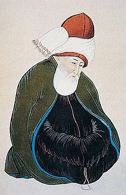

საქართველო IV საუკუნეში ― IV საუკუნე საქართველოში აღინიშნა ქრისტიანობის სახელმწიფო რელიგიად აღიარებით. ამავე საუკუნეში შეუქცევადი გახდა საქართველოს ტერიტორიაზე ფეოდალლური ურთიერთობების ჩამოყალიბება. IV საუკუნეში იბერიის სამეფოს საზღვრები შემცირებული იყო. ის ვრცელდებოდა აღმოსავლეთით ბერდუჯის მდინარემდე, სადაც ციხე–ქალაქი ხუნანი მდებარეობდა. იბერიაში არ შედიოდა კამბეჩოვანი და ჰერეთი, ხოლო დასავლეთით ტაო და სპერი. სახელმწიფო იყოფოდა ხევეად, რომლებიც ერთიანდებოდნენ საერისთავოებში. დედაქალაქი იყო მცხეთა. III საუკუნის ბოლოს, 299 წელს, რომის იმპერიასა და სასანიანთა იმპერიას შორის დაიდო ნიზიბისის ზავი. ირანმა რომს დაუთმო 5 სომხური პროვინცია შუამდინარეთში და ცნო რომის პროტექტორატი დიდ სომხეთსა და იბერიაზე. დიდი სომხეთის ტახტზე იმპერატორ დიოკლეტიანეს ხელდასმით ავიდა თრდატ III. რომის იმპერატორისგან იღებდა სამეფო ნიშნებს ქართლის მეფეც.
წმინდა ნინომ ქრისტიანობა საქართველოში IV საუკუნეში იქადაგა. წარმოშობით ის რომის იმპერიის აღმოსავლეთ პროვინციიდან, კაბადოკიიდან იყო. წმინდა ნინო საქართველოში ფარავნის ტბის მხირდან შევიდა, იქედან ურბნისში არმაზობაზე მოზეიმე ხალხს შეუერთდა მცხეთაში ჩავიდა. აქ მან ნახა კერპების მსახური მეფე მირიან III. „მოქცევაი ქართლისაის“ მიხედვით წმინდა ნინომ ლოცვით სთხოვა ღმერთს კერპების დამსხვრევა და ღმერთმა მისი ლოცვა შეისმინა. მან გააქრისტიანა დედოფალი ნანა და მეფე მირიანი. ახლადგაქრისტიანებულმა მირიან მეფემ 326 წელს ქრისტიანობა სახელმწიფო რელიგიად გამოაცხადა. წმინდა ნინომ მცხეთაში, წმინდა სიდონიას დაკრძალვის ადგილას ააგებინა სვეტიცხოველი. ქართლში ეკლესიის პირველი მამამთავარი გახდა იოანე, რომელიც ქართლში ორ მღვდელთან და სამ დიაკონთან ერთად კონსტანტინე იმპერატომა გაგზავნა. წმინდა ნინომ და იოანემ ქრისტიანობა ქართლის მთიანეთსა და კახეთში იქადაგეს. კახეთში, ბოდბეში გარდაიცვალა წმინდა ნინო.

ნიზიბისის ზავი IV საუკუნის 30-იან წლებამდე არ დარღვეულა რომს აკმაყოფილებდა არსებული მდგომარეობა, რადგან გაქრისტიანებულ ქართლს მოკავშირედ მიიჩნევდა. მცირეწლოვანი სასანიდი შაჰი შაპურ II კი აქტიურ საგარეო პოლიტიკას ვერ ახორციელებდა. 325 წელს რომის იმპერიის დედაქალაქად კონსტანტინოპოლი გამოცხადდა. ამან რომის აღმოსავლური პოლიტიკა გაააქტიურა. 338 წელს შაპურ II-მ წამოიწყო ომი რომის წინააღმდეგ, რომელიც 25 წლის განმავლობაში გრძელდებოდა. 363 წელს დადებული ზავის მიხედვით რომმა საბოლოოდ დაუთმო ირანს ხუთი პროვინცია, მათ შორის სომხეთი. ირანმა მოახერხა კავკასიის ალბანეთის დამორჩილება. სომხეთში შესულ ირანს ქართლის სამეფო დაუპირისპირდა. ირანელები ქართლში შეიჭრნენ, გადააყენეს რომის მოკავშირე მეფე საურმაგ II და მის ნაცვლად გაამეფეს ვარაზ-ბაკური. 373 წელს მცირე ხნით რომმა და ირანმა ქართლი გაიყვეს, მდინარე მტკვრის მარჯვენა ნაპირი რომს, ხოლო მარცხენა ნაპირი ირანს ერგო. ეს დაყოფა მცირე ხანს გაგრძელდა. ირანმა ქართლზე კონტროლი დაამყარა და იქ ირანელი მოხელე პიტიახში დანიშნა. ქართლს ირანის სასარგებლოდ ხარკი დაეკისრა. 380-იან წლებში იმპერატორმა თეოდოსიუს I–მა აღადგინა რომის კონტროლი იბერიაზე. 387 წელს ქართლის სამეფო კვლავ ორად გაიყო.
ამ პერიოდისთვის ეგრისის სამეფოში ქრისტიანობა უკვე კარგად იყო გავრცელებული. 325 წელს ქალაქ ნიკეაში გამართულ პირველ მსოფლიო საეკლესიო კრებას ესწრებოდა ბიჭვინთის ეპისკოპოსი სტრატოფილე. ქრიტიანობა მწიგნობრული რელიგია იყო. მისმა დამკვიდრებამ საფუძველი ჩაუყარა ახალ ქართულ ქრისტიანულ კულტურას და მწერლობას. დასავლეთ საქართველოში ლაზთა მეფეებმა დაიმორჩილეს აფშილები, სანიგები და აბაზგები, ქართლს წაართვეს არგვეთი და ფაქტობრივად დაიკავეს მთელი დასავლეთ საქართველო. ამ სამეფოს ბიზანტიელი ისტორიკოსები ლაზიკას, ხოლო ქართველები ეგრისს უწოდებდნენ. ეგრისი ფორმალურად ინარჩუნებდა რომისადმი მორჩილებას, იცავდა კავკასიონის გადმოსასვლელებს, რაც საკუთრივ ეგრისის ინტერესებშიც შედიოდა.
საქართველო V საუკუნეში ორისამეფოს სახით არსებობდა, აღმოსავლეთში ქართლის სამეფო ცდილობდა სასანიდური ირანისგან დამოუკიდებლობის მოპოვებას, ხოლო დასავლეთში ეგრისის სამეფო ცდილობდა გაეთავისუფლებინა თავი ბიზანტიისგან.
V საუკუნის I ნახევარში სასანიანთა ირანმა გააქტიურა დამპყრობლური პოლიტიკა. 428 წელს ირანმა გააუქმა მეფობა სომხეთში. სომხეთი გადაიქცა ირანის პროვინციად, რომელსაც შაჰის მოხელე მარზპანი მართავდა. იეზდიგერდ II-მ დაიწყო კავკასიაში ზოროასტრიზმის გავრცელება. მან ამ მიზნით დაიბარა კავკასიის ქვეყნების დიდებულები, მათ შორის ქართლის პიტიახში არშუშა. არშუშა შაჰმა მძევლად დაიტოვა, ხოლო კავკასიაში გაგზავნა მოგვები ზოროასტრიზმის საქადაგებლად და ქრისტიანული ტაძრების დასანგრევად. ამას სომხეთსა და ალბანეთში 450-451 წლებში დიდი აჯანყება მოჰყვა. ქართლში აჯანყებას სათავეში არავინ ჩადგომია, რადგან გავლენიანი ქართველი დიდაზნაური არშუშა შაჰის მძევალი იყო. 451 წელს გაიმართა ქალკედონის საეკლესიო კრება, რომელმაც ერთადერთ ჭეშმარიტ რწმენად დიოფიზიტობა აღიარა. ქართლსა და აღმოსავლეთ რომის იმპერიაში (ბიზანტია) დიოფიზიტობა დამკვიდრდა. ირანმა, ბიზანტიის საპირისპიროდ, მხარი მონოფიზიტობას დაუჭირა. ასეთ სიტუაციაში ქართლში გამეფდა ვახტანგ გორგასალი.
ვახტანგ გორგასლის დაბადების თარიღი ქართულ ისტორიოგრაფიაში სადავოა. ძირითადი გავრცელებული მოსაზრებაა, რომ მან ტახტი V საუკუნის შუა წლებში დაიაკავა და II ნახევარში მეფობდა. მისი მცირეწლოვანობის დროს სამეფოს ვახტანგის დედა საგდუხტი მართავდა. ვახტანგის მცირეწლოვნობის დროს ჩრდილოეთ კავკასიიდან ქართლში შეიჭრნენ ალანები და ქართლის დიდი ნაწილი ააოხრეს, თუმცა ციხე-ქალაქები ვერ აიღეს. ალანებმა მხოლოდ კასპის აღება მოახერხეს და ვახტანგის სამი წლის და მირანდუხტი გაიტაცეს. 15 წლის ასაკში ვახტანგმა სათათბიროდ მოიწვია ერისთავები და ჯუანშერ სპასპეტი. მათთან ერთად ვახტანგმა ჩრდილო კავკასიაში ლაშქრობა დაგეგმა. ლაშქრობა წარმატებით დასრულდა, მაის შემდეგ ვახტანგმა დასავლეთ საქართველო დალაშქრა და იქედან ბიზანტიელები განდევნა. დასავლეთ საქართველო ვახტანგ გორგასალმა 466-469 წლებში დაიპყრო. მან აქ დააარსა არგვეთის, თაკვერის, ეგრისისა და სვანეთის საერისთავოები. საზღვარი მდინარე კელასურზე გადიოდა. ვახტანგ გორგასალმა ბიზანტიელებს უკან დაახევინა სამხრეთ საქართველოდანაც. აქ ვახტანგმა ციხე-ქალაქი არტანუჯი დააარსა. ვახტანგი პირველი და მეორე ცოლების მეშვეობით დაუზავდა ბიზანტიასა და ირანს. მან ირანს ქართლში ქრისტიანობის დევნაზე უარი ათქმევინა ქართლის სამხედრო დახმარების სანაცვლოდ. ვახტანგი ირანს შუა აზიაში კიდარიტებთან, ჰეფთალითებთან და ქუშანებთან ბრძოლაში დაეხმარა. სამშობლოში დაბრუნებულმა ვახტანგმა დაიწყო მეფის ხელისუფლების განმტკიცება. აღმოსავლეთით ვახტანგის სამეფოში შედიოდა კამბეჩოვანი, ჰერეთი და წუქეთი. ვახტანგის სამეფო მოიცავდა ცხრა საერისთავოსა და ერთ სასპასპეტოს. ვახტანგ გორგასლის დროს ქართლის სამეფოს საზღვრები საკმაოდ გაფართოებული იყო. მასში შედიოდა ჰერეთი და დასავლეთ საქართველოს ნაწილი. სამეფოში არსებობდა 9 საერისთავო: ჰერეთის, კახეთის, ხუნანის, სამშვილდის, წუნდის, ოძრხის, კლარჯეთის, არგვეთის და თაკვერის, სვანეთის და შიდა ეგრისის. შიდა ქართლი კვლავ სპასპეტს ემორჩილებოდა. ვახტანგ გორგასალი აშენებდა ქალაქებს. გარდა არტანუჯისა, მან ააშენა უჯარმა, ჭერემი, ხორნაბუჯი, ნეკრესი და დაიწყო თბილისის მშენებლობა. ქართველ დიდებულთა ნაწილი ღიად უჭერდა მხას ირანს. მათ შორის ყველაზე გავლენიანი იყო ვარსქენ პიტიახში, რომელიც საკუთარი ნებით ეახლა შაჰ პეროზ I–ს და მიიღო ზოროასტრიზმი. ვარსქენს დაუპირისპირდა მეუღლე შუშანიკი, რომელიც ვარსქენმა სასტიკად აწამებებინა. შემდგომში საქართველოს ეკლესიამ შუშანიკი წმინდანად შერაცხა. 482 წელს ვახტანგ გორგასალმა დაიწყო ირანის წინააღმდეგ აჯანყება ვარსქენ პიტიახშის მოკვლით. ვახტანგს მხარი დაუჭირეს სომხებმა ვაჰან მამიკონიანის მეთაურობით, ასევე მას ჰქონდა ჰუნების მხარდაჭერის იმედი, თუმცა მხოლოდ 300 ჰუნი მეომარი გამოვიდა მის დასახმარებლად. 483 წელს გამართულ ბრძოლაში ქართველთა და სომეხთა გაერთიანებული ჯარი დამარცხდა. 484 წელს ქართლში ირანის ჯარი შევიდა ჰაზარავუხტის სარდლობით. ვახტანგმა თავი დასავლეთ საქართველოს შეაფარა. შაჰ პეროზის გარდაცვალების გამო ჰაზარავუხტი უკან დაბრუნდა. შაჰ ბალაშის დროს ირანი შედარებით დასუსტებული იყო. ამ დროს აღდგა მეფობა ალბანეთში და ნახარართა უფლებები სომხეთში. ვახტანგმა შეძლო ქართლში დაბრუნება. ვახტანგს კონფლიქტი მოუვიდა მცხეთის მთავარეპისკოპოს მიქაელთან. ქართულ ისტორიოგრაფიაში კონფლიქტის მიზეზებთან დაკავშირებით აზრთა სხვადასხვაობაა. ერთ–ერთ სავარაუდო მიზეზად სახელდება 451 წელს გამართული ქალკედონის საეკლესიო კრება და დაპირისპირება დიოფიზიტობასა და მონოფიზიტობას შორის. ფაქტია, რომ ვახტანგმა მოახერხა მიქაელის ნაცვლად პეტრეს დანიშნვნა. პეტრე უკვე კათოლიკოსის სტატუსით დაინიშნა ქართლში, რაც ქართლის ეკლესიის ავტოკეფალიას ნიშნავდა. მცხეთის ეპისკოპოსად დაინიშნა სამოელი, ახალი ეპისკოპოსები დაინიშნენ კლარჯეთში, ახიზში, არტაანში, ერუშეთში, ჯავახეთში, წუნდაში, მანგლისში, ბოლნისში, რუსთავში, ნინოწმინდაში, უჯარმაში. ამათგან ზოგიერთი ახალი საეპისკოპოსო იყო. 492-499 წლებში სომხეთი აჯანყდა ირანის წინააღმდეგ. შაჰმა კავად I–მა 499-502 წლებში გაილაშქრა სომხეთისა და ქართლის წინააღმდეგ. სამგორის ვაკეზე გამართულ ბრძოლაში ვახტანგი სასიკვდილოდ დაჭრეს იღლიის ქვეშ. ის უჯარმაში გარდაიცვალა და დაკრძალეს სვეტიცხოველში, სადაც მისივე ბრძანებით ბაზილიკის ტიპის ტაძარი იყო აშენებული.

ვახტანგის ძემ დაჩიმ დაასრულა თბილისის მშენებლობა და ქართლის დედაქალაქი თბილისში გადაიტანა. ამავე დროს აშენდა თბილისში ქართლის ერთ-ერთი უძველესი ტაძარი ანჩისხატი. დაჩის შემდეგი მეფეები თბილისში ისხდნენ მეფობის გაუქმებამდე. მეფობის გაუქმების შემდეგ თბილისში იჯდა შაჰის მოხელე, მარზპანი და ქართლის ერისმთავარი. მცხეთიდან თბილისში დედაქალაქის გადატანა რამდენიმე ფაქტორმა განაპირობა. თბილისს ჰქონდა მოხერხებული მდებარეობა, ქვაბულში მოქცეული და მთებით გარშემორტყმული ქალაქი მარტივი დასაცავი იყო, ის კეტავდა სამხრეთ-აღმოსავლეთიდან შიდა ქართლისენ მიმავალ გზას, ასევე თბილისი მტკვრის ხეობაში გამავალ სავაჭრო-საქარავნო გზაზე მდებარეობდა.
V საუკუნის II ნახევარში დასავლეთ საქართველოს ნაწილი (არგვეთი, თაკვერი, სვანეთი), ქართლის სამეფოს შემადგენლობაში მოექცა. ეგრისის მეფე გუბაზ I-მა მოინდომა ბიზანტიის იმპერიის მორჩილებიდან გამოსულიყო და ტახტზე თანამოსაყდრედ შვილი აიყვანა. ბიზანტიის იმპერატორმა მარკიანემ ლაზების წინააღმდეგ გაილაშქრა, მაგრამ დამარცხდა. მან ახალი ლაშქრობისთვის მზადება დაიწყო. გუბაზმა სცადა ირანის შაჰ იეზდიგერდ II-სთან კავშირის დამყარება, მაგრამ ირანს ომი ჰქონდა ჰუნებთან და ეგრისისთვის არ ეცალა. საბოლოოდ, ბიზანტიის იმპერატორის მოთხოვნით გუბაზი გადადგა და ტახტი შვილს დაუთმო.
საქართველო VI საუკუნეში იყო სასანიდურ ირანსა და ბიზანტიის იმპერიას შორის დაპირისპირების არეალი. ორივ იმპერიამ VI საუკუნეში მიაღწია საკუთარი სიძლიერის ზენიტს. ირანმა VI საუკუნეში გააუქმა ქართლის სამეფო და იბრძოდა ეგრისის სამეფოს დასაკავებლად და შავ ზღსქართველოს ვაზე გასასვლელის მოსაპოვებლად. დასავლეთ საქართელოში ირანსა და ბიზანტიას შორის ოცწლიანი ომი, რომელიც ეგრისის დიდი ომის სახელითაა ცნობილი, ბიზანტიის გამარჯვებით დასრულდა.
VI საუკუნე კავკასიაში ირანის აქტიურობით დაიწყო. 510 წელს ირანმა გააუქმა მეფობა ალბანეთში, ხოლო სომხეთის სამეფო წინა საუკუეში იყო გაუქმებული. ცხადი იყო, რომ ირანი ქართლშიც იმავეს აპირებდა. ირანის შაჰმა ქართლის მეფე გურგენს ქრისტიანობის უარყოფა და ზოროასტრიზმის მიღება მოსთხოვა. გურგენის აჯანყება 523 წელს დამარცხებით დასრულდა, მეფემ თავი ბიზანტიას შეაფარა. ამით ქართლში მეფობა გაუქმდა. ქართლის მმართველი გახდა ირანელი მოხელე მარზპანი. წყაროებში ნახსენებია ქართლის მარზპანი არვანდ გუშნასპი. მანამდე კი ბიზანტიის იმპერიამ დაიკავა ჯავახეთი, კლარჯეთი და სამცხე. 533-537 წლებში ქართლში მივიდნენ ასურელი მამები: იოანე ზედაზნელი, დავით გარეჯელი, აბიბოს ნეკრესელი, შიო მღვიმელი, იოსებ ალავერდელი, ანტონ მარტყოფელი, თადეოზ სტეფანწმინდელი, პიროს ბრეთელი, ისე წილკნელი, სტეფანე ხირსელი, ზენონ იყალთოელი, მიქაელ ულუმბოელი და ისიდორე სამთავრელი. მათი მიზანი ქართლში ქრისტიანობის განმტკიცება იყო. მათ ჩაუყარეს საფუძველი სამონასტრო ცხოვრებას. მათ მიერ დაარსებული მონასტრები ქართული მწიგნობრობის და კულტურის კერებად იქცნენ.
ქართლისგან განსხვავებულად უყურებდნენ ირანს ეგრისის სამეფოში. ლაზიკაში ირანს ბიზანტიის მოწინააღმდეგედ და მათ მოკავშირედ აღიქვამდნენ. სწორედ ამ მოსაზრებით ლაზიკის მეფის შვილმა წათე I-მა ზოროასტრიზმი მიიღო. 523 წელს წათე მეფე გახდა. ის მიხვდა რომ ქრისტიანული ქვეყანა წარმართ მეფეს ვერ მიიღებდა, ამიტომ კვლავ ქრისტიანობას დაუბრუნდა. წათეს პოლიტიკური ორიენტაციის შეცვლამ, ირანის შაჰის აღშფოთება გამოიწვია და ლაზიკის დასასჯელად სამხედრო ძალა გაგზავნა. წათემ დახმარებისთვის ბიზანტიას მიმართა. ამ დროს ბიზანტიის იმპერატორი იყო იუსტინიანე I. ლაზებმა და ბიზანტიელებმა ირანელები დაამარცხეს. იუსტინიანემ ეგრისის ციხეებში სკანდასა და შორაპანში ბიზანტიური გარნიზონები ჩაეყენებინა. მათი მომარაგება ადგილობრივ მოსახლეობას დაევალა. ლაზები თავდაპირველად ასრულებდნენ ამ მოვალეობას, ხოლო შემდეგ შეწყვიტეს გარნიზონების მომარაგება. ბიზანტიელებმა ციხეები დაცალეს და ირანმა ისინი უბრძოლველად დაიკავა. 531 წელს ირანის შაჰი გახდა ხოსრო I ანუშირვანი. 532 წელს ირანსა და ბიზანტიას შორის დაიდო საუკუნო ზავი. ბიზანტიას სკანდა და შორაპანი დაუბრუნდა. იუსტინიანე ხვდებოდა, რომ ზავი დროებითი იყო ამიტომ მან დასავლეთ საქართველოს გამაგრება დაიწყო. ააგებინა ძლირი ციხესიმაგრე პეტრა.
ბიზანტიელთა ბატონობისგან შეწუხებულმა ლაზებმა დახმარება ირანის შაჰს სთხოვეს. 542 წელს ხოსრო I ქართლში დიდი ჯარით შევიდა. შაჰი ხმას ავრცელებდა, რომ ჰუნების წინააღმდეგ ლაშქრობისთვის ემზადებოდა. ირანის ჯარმა სწრაფად გაიარა ქართლი. საზღვარზე ირანელებს გუბაზ II-ს მეგზურები დახვდნენ და ლაზიკაში გადაიყვანეს. ირანელთა და ლაზთა გაერთიანებულმა ლაშქარმა აიღო ბიზანტიელთა უმთავრესი დასაყრდენი პუნქტი პეტრას ციხე. ამ დროს შაჰმა შეიტყო რომ ბიზანტიელთა დიდი ლაშქარი ველისარიუსის სარდლობით ირანში შეჭრილიყო. ხოსრო ირანში დაბრუნდა და პეტრას ციხეში გარნიზონი დატოვა. ამ დროს ბიზანტიას მდგომარეობა გაურთულდა დასავლეთით. ამიტომ ირანს დაზავება შესთავაზა. 545 წელს ირანსა და ბიზანტიას შორის დაიდო ხუთწლიანი ზავი. ირანის შაჰმა ეგრისში თავისი საიდუმლო გეგმის განხორციელება დაიწყო. მას ლაზიკის მოსახლეობა უნდა აეყარა და ამ ტერიტორიაზე ირანელები უნდა დაესახლებინა. ამ გეგმის განხორციელებისთვის კი აუცილებელი იყო გუბაზ მეფის მკვლელობა. ამ მიზნის შესასრულებლად ირანელებმა შეარჩიეს ლაზი დიდებული ფარსანსი. ფარსანსმა გუბაზთან პირადი კონფლიქტი დაივიწყა და მეფეს ყველაფერი მოახსენა. ირანელთა ბატონობისგან მთელი მოსახლეობა შეწუხებული იყო. ირანელები ბიზანტიელებს არაფრით არ სჯობდნენ. გუბაზმა გადაწყვიტა დაეწყო ბრძოლა ირანელთა წინააღმდეგ და დახმარებისთვის ბიზანტიას მიმართა. ამ დროისთვის იუსტინიანეს მოგვარებული ჰქონდა პრობლემები დასავლეთში. 549 წელს ბიზანტიელთა ლაშქარი დაგისთეს სარდლობით პეტრას ციხეს მიადგა. ხოსრომ თავისი გარნიზონის დასახმარებლად დიდი ლაშქარი გაგზავნა მერმეროეს სარდლობით. დაგისთემ შეცდომა დაუშვა და მეტად მცირე რაზმი გაგზავნა ლიხის ქედის გადმოსასვლელის დასაცავად. ირანის ჯარმა ყოველგვარი წინააღმდეგობის გარეშე მოახერხა ლაზიკაში შესვლა. ბიზანტიელებმა მიატოვეს პეტრა და უკან დაიხიეს. ირანელებმა კიდევ უფრო გაამაგრს პეტრა და ლაზიკის შიდა რაიონების აოხრება დაიწყეს. ლაზებმა გუბაზის მეთაურობით დიდი წინააღმდეგობა გაუწიეს ირანელებს. ირანელებმა ლაზიკა დატოვეს და ქართლში დაბრუნდნენ. 550 წელს შაჰმა ლაზიკაში ახალი ჯარი გაგზავნა. ბრძოლის დროს სასიკვდილოდ დაჭრა ირანელთა სარდალი ხურიანე. ირანის ჯარი აირია, ლაზების შეტევას ვერ გაუძლო და დამარცხდა. ბიზანტიელებმა ამის შემდეგ შეძლეს პეტრას აღება, მაგრამ არ დაიკავეს და დაანგრიეს ხოსრომ ლაზიკაში ახალი ჯარი გაგზავნა მერმეროეს სარდლობით. ამჯერად ირანელთა სამიზნე არქეოპოლისის აღება იყო, მაგრამ წარმატებას ვერ მიაღწეს. ლაზმა დიდებულმა თოეფობით ირანელებს უქიმერიონის ციხე გადასცა და თაკვერისა და სვანეთისკენ გზა გაუხსნა. ირანელებმა სვანეთი დაიკავეს და იქ თავისი ჯარი ჩააყენეს. ამავდროულად ბიზანტიელთა წინააღმდეგ დაიწყო აბაზგების აჯანყება 550 წელს და მისიმიელთა აჯანყება 555 წელს. ბიზანტიელთა სარდლებმა 554 წელს მოკლეს გუბაზ II, რადგან ის ადგილობრივი სარდლების მოქმედების შესახებ იმპერატორს ატყობინებდა. გუბაზის მკვლელობამ ლაზების სასტიკი აღშფოთება გამოიწვია. ლაზი დიდებულების შეკრებაზე ორი თვალსაზრისი გამოიკვეთა. ნაწილი აიეტის მეთაურობით ირანული ორიენტაციის მომხრეები იყვნენ. ნაწილი კი ფარტაზის მეთაურობით კი კვლავ ბიზანტიელბს უჭრდნენ მხარს. საბოლოოდ ბიზანტიის მომხრე აზრმა გაიმარჯვა იმ პირობით, რომ გუბაზის მკვლელები დაისჯებოდნენ. იუსტინიანემ ეს პირობა შეასრულა. ლაზიკის მეფე გახდა გუბაზის ძმა წათე II. 562 წელს ომი დასრულდა. ირანელებმა დასავლეთ საქართველო ბიზანტიას დაუთმო, თუმცა სვანეთი VI საუკუნის 70-იან წლებამდე შეინარჩუნა. ოცწლიანმა ომმა ააოხრა და გაანადგურა დასავლეთ საქართველოს უდიდესი ნაწილი, ამასთან ეს ომი უშედეგოდ დასრულდა ლაზებისთვის, მათ ვერ მოახერხეს ბიზანტიის იმპერიის გავლენისგან გათავისუფლება
დასავლეთ საქართველოში განცდილმა მარცხებმა შეასუსტა ირანელთა პოზიციები აღმოსავლეთ საქართველოში. თავის დროზე ქართლში მეფობის გაუქმებას ხელი დიდად შეუწყო დიდაზნაურთა პოზიციამ, რომლებსაც სურდათ სამუდამოდ დაუფლებოდნენ იმ მიწებს, რომლებიც მეფისგან დროებით მიიღეს. ამიტომ დიდაზნაურებმა ირანს დაუჭირეს მხარი. ქართლში მეფობის გაუქმების შემდეგ დიდაზნაურებმა ხელში ჩაიგდეს მიწების ძირითადი ნაწილი და უკვე მზად იყვნენ დაპირისპირებოდნენ ირანს.
571 წელს სომხეთში ვარდან მამიკონიანის მეთაურობით დიდი ანტიირანული აჯანყება დაიწყო. სომხებს ქართველებიც მიემხრნენ. აჯანყებულებმა დახმარება ბიზანტიას სთხოვეს. ბიზანტიის იმპერატორი იუსტინე II დიდი ხანია ზავის დარღვევისთვის საბაბს ეძებდა. შექმნილი ვითარებით ისარგებლეს ქართლელებმა და სახელმწიფოებრივი დამოუკიდებლობა აღიდგინეს. ერისთავებს მეფე აღარ სურდათ, რადგან ხელშეუხებელი უნდა ყოფილიყო ერისთავების უფლებები დასაკუთრებულ მიწებზე. ამიტომ ქვეყნის ნომინალურ მმართველი გახდა ერისმთავარი, რომელიც იყო პირველი თანასწორთა შორის. მისი ხელისუფლება მხოლოდ სიმბოლურად ითვლებოდა უზენაესად. ერისმთავრს არ ჰქონდა ურჩი ერისთავის გადაყენების უფლება. პირველი ერისმთავარი გუარამი გახდა, რომელიც ბაგრატიონების საგვარეულოდან იყო. ბიზანტიის იმპერატორმა გუარამს კურაპალატის ტიტული უბოძა. ომი ბიზანტიასა და ირანს შორის მიდიოდა, პარალერულად მოლაპარაკებებიც იმართებოდა. ბიზანტია თანახმა იყო ირანისთვის დაეთმო ქართლი და სომხეთი, ოღონდ აჯანყების მონაწილეების გაცემაზე უარს ამბობდა. ირანი კი სწორად აჯანყებულთა გაცემას ითხოვდა. ზავის დადება იწყებოდა როდესაც ბიზანტიელებმა სასტიკი მარცხი განიცადეს სომხეთში. ირანის შაჰმა საზავო პირობები დაამძიმა. 579 წელს ხოსრო I გარდაიცვალა, ახალი შაჰი ჰორმიზდ IV იძულებული გახდა შეგუებოდა ქართლში ადგილობრივ მმართველობას. თუმცა ქართლის ერისმთავარი შაჰის ვასალი გახდა. ამას ქართლში მოჭრილი მონეტებიც ადასტურებს, მათზე გამოსახულია ჰორმიზდ IV და ცეცხლის ემბლემა. VI საუკუნის ბოლოს ირანში შიდაარეულობის გამო ხოსრო II იძულებული გახდა ბიზანტიისთვის დაეთმო ზოგიერთი პროვინცია, მათ შორის ქართლი და სომხეთი. ქართლი მთლიანად გათავისუფლდა ირანის ბატონობისგან. ამ დროს ერისმთავარი იყო სტეფანოზ I. ბიზანტიის იმპერატორმა მას პატრიკიოსის ტიტული უბოძა. ბიზანტიის ტიტულებს ატარებდნენ სტეფანოზის ძმა, შვილი და შვილიშვილიც. სტეფანოზ I შეეცადა ძალაუფლება განემტკიცებინა, მაგრამ ირანელთა შიშით მეფობის ტიტული ვერ მიიღო. სტეფანოზის მმართველობის დროს აიგო მცხეთის ჯვარი.
საქართველო VII საუკუნეში წინა საუკუნეების მსგავსად კვლავ სასანიანთა იმპერიასა და ბიზანტიის იმპერიას შორის ბრძოლების ასპარეზი იყო. VII საუკუნის 30-იან წლებში კი სამხრეთიდან ახალი და წინა ორზე უფრო ძლიერი დამპყრობელი გამოჩნდა არაბთა სახალიფოს სახით.
ქალკედონის მსოფლიო საეკლესიო კრების შემდეგ დაირღვა კავკასიის სახელმწიფოების რელიგიური ერთობა. სომხეთში მონოფიზიტობა დამკვიდრდა, ქართლსა და ბიზანტიაში კი დიოფიზიტობა. VII საუკუნე საუკუნის დასაწყისში. ცურტაველი ეპისკოპოსი მოსე, წარმოშობით სომეხი, რომელიც მონოფიზიტობას უჭერდა მხარს, გაიქცა სომხეთში და დახმარება ითხოვა. სომხეთის კათალიკოსსა და ქართლის კათოლიკოს კირონ I-ს შორის გაიმართა წერილობითი პოლემიკა. საბოლოოდ ყველააფერი 608 წლის საეკლესიო განხეთქილებით დასრულდა.
VII საუკუნის დასაწყისში ირანის შაჰმა ხოსრო II-მ წელს ბიზანტიის იმპერიას ომი გამოუცხადა და თავდაპირველად წარმატებებს მიაღწია. VII საუკუნის 10-იან წლებში ირანისგან შევიწროებული ერისმტავარი ადარნასე და კათალიკოსი კირიონი და ერისმთავარი ადარნასე იძულებულები შეიქმნენ ქართლი დაეტოვებინათ. ადარნასე კახეთში გაიხიზნა, ხოლო კირონის შესახებ არსებობს მოსაზრება, რომ ჯერ ფაზისში მოღვაწეობდა, შემდეგ კი ალექსანდრიის პატრიარქი გახდა. ირანთან ომში მდგომარეობა შეცვალა ბიზანტიის ახალმა იმპერატორმა ჰერაკლემ. 627 წელს ჰერაკლე ეგრისში შეიჭრა. ჰერაკმელ დაიმორჩლა აფხაზეთი და დასვა იქ მის მიერ დანიშნული ერისთავი. დაუკავშირდა ჩრდილო კავკასიელ ხაზარებს, თურქთა ხაკან ჯაბღუს და მათთან ერთად 627 წლის ზაფხულში გაილაშქრა თბილისზე. ქართლის ერისმთავარი სტეფანოზ II ინარჩუნებდა ირანის ერთგულებას. მან ქალაქი არ დათმო. ხანგრძლივი ალყის მიუხედავად ჰერაკლემ და ხაზარებმა ქალაქის აღება ვერ შესძლეს. 628 წელს ხაზარები კვლავ მიადგნენ თბილისს, აიღეს და საშინლად ააოხრეს ქალაქი და მოკლეს სტეფანოზ II. იმავე წელს დაიდო ზავი ბიზანტიასა და ირანს შორის. ჰერაკლემ დაიბრუნა: სომხეთი, სირია, მესოპოტამია და ეგვიპტე. მასვე ერგო იბერიაც. დასავლეთ თურქთა სახაკანოს გავლენის ქვეშ დარჩა კავკასიის ალბანეთი.
VII საუკუნის 30-იანი წლებიდან დაიწყო არაბთა დაპყრობითი ომები, რომლის შედეგადაც მათ უზარმაზარი იმპერია შექმნეს. კავკასიაში არაბები VII საუკუნის 30-იან წლებში გამოჩნდნენ. მათ იღეს დვინი, ხოლო ქართლში ლაშქრობაში არაბებს დიდთოვლიანმა ზამTარმა შეუშალა ხელი. 642-643 წლებში არაბები ქართლში შეიჭრნენ, მაგრამ ამ ლაშქრობას არავითარი პოლიტიკური შედეგი არ მოჰყოლია. 654 წელს არაბებმა სომხეთში დაამარცხეს ბიზანტიელები და ქართლს მიადგნენ. ქართლის ერისმთავარმა სტეფანოზ II-მ არაბთა სარდალ ჰაბიბ იბნ მასლამას დაზავება შესთავაზა. ქართლსა და არაბთა სახალიფოს შორის დაიდო დაცვის სიგელი. ქართლის მოსახლეობას დაეკისრა გადასახადი (ჯიზია) ერთი დინარი ერთ კომლზე. შენარჩუნებული იყო სარწმუნოების თავისუფლება, თუ ქართველი მიიღებდა ისლამს ის თავისუფლდებოდა გადასახადებისაგან. ქართლის სამეფოსგან ამ დროს გამოთიშეული იყო კამბეჩოვანი, რომელიც სალმან იბნ რაბიან 640-იან წლებში დაიპყრო რანთან, , შაქთან და სხვა პროვინციებთან ერთად. VII საუკუნის 50-იანი წლების ბოლოს არაბთა სახალიფოში ატყდა შინაომები, რომელიც რამდენიმე წელიწადს გაგრძელდა. ამით ისარგებლა ქართლის ერისმთავარმა ნერსე I-მა და არაბები არამარტო ქართლიდან არამედ სომხეთიდანაც განდევნა. ქართველთა და სომეხთა საერთო აჯანყება დაახლოებით 680-685 წლებში მოხდა. 689 წელს ქართლსა და სომხეთს ხაზარები შეესიენ. შემოსევის დროს ხაზარებმა ამ ქვეყნების ერისთავები და მთავრები ამოხოცეს. ბიზანტიის იმპერიისა და არაბთა სახალიფოს ზავის შემდეგ ქართლი ორივე ქვეყანას უხდიდა ხარკს.
არაბთა დროებითმა დასუსტებამ ბიზანტიას საშუალება მისცა დაკარგული ტერიტორიები დაებრუნებინა. 660-იან წლებში ბიზანტიამ ეგრისის სამეფო გააუქმა და მის მმართველს პატრიკიოსის ტიტული მისცა. ეგრისისგან გამოყოფილი იყო აფხაზეთი, რომელიც ასევე ბიზანტიის უშუალო ვასალი იყო. 697 წელს პატრიკიოსი სერგი ბარნუკის ძე ბიზანტიის წინააღმდეგ აჯანყდა და არაბები დასავლეთ საქართველოში გადაიყვანა.
საქართველო VIII საუკუნეში მთლიანად არაბთა სახალიფოს გავლენის ქვეშ მოექცა. არაბთა გარნიზონები იდგა თბილისსა და ციხე გოჯში. VIII სუაკუნის დასაწყისში შეიქმნა არმინია, საამირო, რომელშიც შედიოდა ალბანეთი ქართლი და სომხეთი და რომლის ცენტრი იყო დვინი. 704-705 წლებში არაბებმა თბილისში გახსნენ ზარაფხანა, სადაც ჭრიდნენ ვერცხლის ფულს. ბიზანტიის იმპერია ცდილობდა გავლენა აღედგინა დასავლეთ საქართველოში და ჯარიც კი გამოგზავნა. ალყა შემოარტყეს ციხე-გოჯს, არაბებმა შესძლეს ბიზანტიელების მოგერიება. მალე არაბებმა დამატებითი ჯარი გაგზავნეს დასავლეთ საქართველოში. ბიზანტიელებმა თავი აარიდეს მათთან შეტაკებას და უკან გაბრუნდნენ. ბიზანტიამ მაინც შესძლო თავისი პოზიციების ნაწილის აღდგენა, მან დაიქვემდებარა საქართვეელოს უკიდურეს ჩრდილოეთში მცხოვრები აბაზგია და აფშილეთი. ბიზანტიას კავშირი ჰქონდა შეკრული ხაზარებთან და მათი დახმარებით ცდილობდა არაბების წინააღმდეგ ბრძოლას. 711 წელს მათ გაინაწილეს კავკასია, რომლის აღმოსავლეთ ნაწილი ხაზარებს ერგო, ხოლო დასავლეთი ბიზანტიას. ხაზარების ლაშქრობების აღსაკვეთად 729 წელს ქართლში მოვიდა არაბი სარდალი ჯარაჰი. მისი მთავარი მიზანი ხაზარების დამარცხება იყო. ჯაჰარმა განაახლა დაცვის სიგელი და გაზარდა ჯიზია და დააწსა ახალი გადასახადი ხარაჯა. ერთი წლის შემდეგ კვლავ ჯარაჰმა დალაშქრა ქართლი. მან შეძლო ჩრდილო კავკასიასი გადასვლა და ხაზარების დამარცხება. ხაზარებმა საპასუხო ლაშქრობაში გაანადგურეს არაბების ჯარი და მოკლეს ჯარაჰი. ხაზარებს და არაბებს შორის ომმა საშინლად ააოხრა ქართლი. არაბთა ახალი გადასახადების გადახდა საშინელ მდგომარეობაში აგდებდა მოსახლეობას. მოსახლეობამ რამდენიმეჯერ სცადა აჯანყება. კავკასიის საბოლოოდ დასამორჩილებლად და ხაზარების დასამარცხებლად ხალიფამ 120 000-იანი არმია გამოგზავნა თავისი ბიძაშვილის მარვან II იბნ მუჰამადის სარდლობით. ქართულ წყაროებში ის მურვან ყრუს სახელითაა ცნობილი. მურვან ყრუ ქართლს პირველად 735 წელს შეესია. ქართლის აოხრების შემდეგ ის დასავლეთ საქართველოში გადავიდა. არგვეთში მას ადგილობრივი მთავრები ძმები დავითი და კონსტანტინე მხეიძეები შეებნენ. ისინი მურვან ყრუმ შეიპყრო და აწამა. საქართველოს ეკლესიამ ძმები წმინდანებად შერაცხა. მურვან ყრუმ აიღო ციხეგოჯი და ცხუმი და ანაკოფიას მიადგა. ციხე დაიცვეს ქართლის ერისმთავარმა მირმა, მისიმ ძმამ არჩილმა და მათ ეხმარებოდა აფხაზთა ერისთავმა ლეონ I-მა. მურვან ყრუ უკან გაბრუნდა. მისი სამწლიანი ლაშქრობის შემდეგ არაბებმა საქართველოში მტკიცედ მიკიდეს ფეხი. მათ თბილისში თავიანთი მოხელე ამირა დანიშნეს. ამირას დაექვემდებარა ქართლის ერისმთავარიც. უმნიშვნელოვანეს ციხეებში არაბტა გარნიზონები ჩადგა. ერისმთავრებს მხოლოდ ხარკის აკრეფა და ქართული ჯარის სარდლობა ევალებოდათ. საქართველოს შემდეგ მურვან ყრუმ ხაზარებიც დაამარცხა და მალე ხალიფა გახდა. 764 წელს ქართლი დალაშქრეს ხაზარებმა. ხაზართა ხანაკს სურდა ქართლის ერისმთავრ ჯუანშერის და შუშანის ცოლად შერთვა. ხაზარებმა ბლუჩანის სარდლობით კახეთი დალაშქრეს, ჯუანშერი და შუშანი დაატყვევეს. შუშანმა თავი მოიკლა, ხოლო ჯუანშერი ხაზარებმა გაათავისუფლეს. VIII საუკუნის მეორე ნახევარში არაბების წინააღმდეგ ბრძოლას სათავეში ჩადგა ერისმთავარი ნერსე II. 772-773 წლებში ხალიფამ ის თავისთან სახალიფოს დედაქალაქ ბაღდადში დაიბარა და სამი წლით დააპატიმრა. იქ ნერსე ტყვეობაში იყო. ქართლში დაბრუნებულ ნერსეს თან გაჰყვა არაბი აბო თბილელი, რომელიც ხაზარეთში გაქრისტიანდა. ნერსე ცდილობდა ხაზარებისგან სამხედრო დახმარების მიღებას, ხოლო ოჯახი აფხაზეთში გახიზნა. ნერსემ ხაზარებისგან რეალური დახმარება ვერ მიიღო. ამასობაში კი თბილისის ამირას ბრძანებით აბო შეიპყრეს, აწამეს და 786 წელს სიკვდილით დასაჯეს. აბოს წამება აღწერა იოანე საბანისძემ. VIII საუკუნის ბოლოს არაბთა ბატონობა შეირყა.


საქართველო IX-X საუკუნეებში — IX საუკუნეში დაიწყო ქართული სამეფო-სამთავროების ერთიან სამეფოდ ინტეგრაციის პროცესი, რაც X საუკუნის ბოლოს საქართველოს სამეფოს ჩამოყალიბებით და ბაგრატ III-ის გამეფებით დასრულდა.
VIII საუკუნის ბოლოს არაბთა სახალიფოს დასუსტების პროცესი დაემთხვა საქართველოში სამეფო-სამთავროების ჩამოყალიბების პროცესს. ერთ-ერთი პირველი ჩამოყალიბდა კახეთის სამთავრო, რომელიც ქართლის საერისმთავროს გამოეყო. კახეთის სამთავროს დაარსება წანარებს უკავშირდება. კახეთის სამტავროს ცენტრი იყო თიანეთი, ხოლო სამთავროს სათავეში ქორეპისკოპოსი ედგა. თავდაპირველად ქორესპიკოპოსი არჩევიტი იყო, შემდგომში ეს თანამდებობა ორი საგვარეულოს, დონაურების და არევმანელების საგვარეულოს ეკავა. VIII საუკუნის II ნახევარში კახეთის აღმოსავლეთით ჩამოყალიბდა ჰერეთის სამთავრო. IX საუკუნის ბოლოს ჰერეთის მთავარმა „რანთა მეფის“ ტიტული მიიღო. ჰერეთის სამთავრი ცდილობდა ძველი ალბანეთის ტერიტორიების დაკავებას. VIII საუკუნის დასაწყისში დაიწყო აფხაზეთის საერისთავოს გაძლიერება. მურვან-ყრუმაც ვერ შეძლო ანაკოფიის აღება. აფხაზეთმა დაიწყო გაფართოება და დაიკავა აფშილეთი. VIII საუკუნის II ნახევარში ლეონ II-მ ისარგებლა ბიზანტიის დასუსტებით და ხაზარების დახმარებით საკუთარი ხელისუფლება მთელ ეგრისზე გაავრცელა და აფხაზთა სამეფოს პირველი მეფე გახდა. აფხაზთა სამეფოს დედაქალაქი იყო ქუთაისი. ის დაყოფილი იყო საერისთავოებად. აფხაზთა სამეფო ძლიერი ცენტრალიზებული სახელმწიფო იყო. მისი მეფეები იბრძოდნენ საქართველოს გაერთიანებისთვის. ყველაზე გვიან ჩამოყალიბდა ტაო-კლარჯეთის სამეფო. IX საუკუნის დასაწყისში ქართლის ბოლო ერისმთავარმა აშოტ I დიდმა ქართლი მიატოვა და ოჯახთან ერთად სამხრეთ საქართველოს შეაფარა თავი. მან აღადგინა ვახტანგ გორგასლის მიერ დაარსებული არტანუჯი და ის საკუთარ რეზიდენციად აქცია. აშოტამდე ამ მხარეში მოღვაწეობა დაწყებული ჰქონდა სასულიერო პირს გრიგოლ ხანძთელს. სამხრეთ საქართველოდან დაიწყო ბრძოლა ქვეყნის გაერთიანებისთვის. აშოტს ბიზანტიის იმპერატორმა აშოტს კურაპალატის ტიტული მიანიჭა. მიუხედავად ამისა, აშოტს დამოუკიდებლად, ბიზანტიის დახმარების გარეშე უწევდა სამთავროს გაძლიერებისთვის ბრძოლა. მის სამფლობელოში შედიოდა ტაო, კლარჯეთი, არტაანი, შავშეთი, სამცხე, ჯავახეთი, შიდა ქართლი. 826 წელს აშოტი ეკლესიის საკურთხეველში მოკლეს შეთქმულებმა. მისი მემკვიდრე გახდა შუათანა ძე ბაგრატ I. ბაგრატ I-ის შვილიშვილმა ადარნასე II-მ მიიღო ქართველთა მეფის ტიტული. პავლე ინგოროყვას აზრით ეს ტიტული ჯერ კიდევ აშოტ დიდს ჰქონდა. ქართველთა სამეფო რამდნეიმე პატარა სამტავროსგან შედგებოდა და დეცენტრალიზებული სახელმწიფო იყო. ცალკე პოლიტიკურ ერთეულს წარმოადგენდა თბილისის საამირო. არაბთა სახალიფოს დასუსტების პარალერულად მცირდებოდა მათი გავლენა თბილისის ამირებზეც. შიდა ქართლის დაკარგვის შემდეგ თბილისის ამირას მხოლოდ თბილისი და მისი შემოგარენი ემორჩილებოდა. აშოტ დიდის გარდაცვალების შემდეგ შიდა ქართლზე კონტროლი თბილისის ამირამ დაიბრუნა. ამირები ხალიფას აღარ ემორჩილებოდნენ. ამირა ისჰაკ იბნ-შუაბი 23 წლის განმავლობაში დამოუკიდებლად მართავდა თბილისს. 853 წელს თბილისი აიღო და ამირა მოკლა ბუღა თურქმა.
ქართული სამეფო-სამთავროები იბრძოდნენ პირველობისთვის. ქართული სამეფო-სამთავროების ბრძოლაში ერთვებოდა ანისის სამეფო. ამ ბრძოლაში დიდი მნიშვნელობა ენიჭებოდა შიდა ქართლს. 860-იან წლებში შიდა ქართლი დაიკავა აფხაზეთის მეფე გიორგი I-მა. მისი გარდაცვლების შემდეგ აფხაზთა სამეფოს ტახტი შავლიანებმა მიიტაცეს, შიდა არეულოს გამო აფხაზთა სამეფოს შიდა ქართლში ფეხის მოკიდება გაუჭირდა. შიდა ქართლის ხელახლა დაკავება აფხაზთა მეფეებმა X საუკუნის დასაწყისში სცადეს. შიდა ქართლი კონსტანტინე III-მ დაიკავა და იქ ერისთავად ივანე ტბელი დანიშნა. ამის შემდეგ აფხაზთა მეფეებს შიდა ქართლი აღარ დაუთმიათ. 914 წელს საქართველოში შეიჭრა სამხრეთ აზერბაიჯანის ამირა აბულ-კასიმი. ის ჯერ თბილისს მიადგა შემდეგ კახეთში აიღო უჯარმის და ბოჭორმის ციხეები აიღო. კახეთის ქორეპისკოპოსმა მას მორჩილება ღუთქვა. აბულ კასიმი სამცხეში გადავიდა და ყველისციხეს ალყა შემოარტყა, აიღო და აწამა მისი მცველი გობრონი. აბულ კასიმის ლაშრობა იყო არაბთა ბოლო ლაშქრობა საქართველოში. აფხაზთა მეფე კონსტანტინე III-ის გარდაცვალების შემდეგ მის ძეებს, გიორგისა და ბაგრატს შორის ატყდა ბრძოლა ტახტისთვის, რომელშიც გიორგიმგაიმარჯვა. ის დიდად უწყობდა ხელს ჩრდილო კავკასიაში ქრისტიანობის გავრცელებას. გიორგიმ გაილაშქრა კახეთის ქორეპისკოპოსის წინააღმდეგ და თითქმის მთელი კახეთი დაიკავა. როგორც კი ის დასავლეთ საქართველოში დაბრუნდა, კვირიკე II-მ ქართლის აზნაურების დახმარებით დაიბრუნა კახეთის სამთავრო. ქართლის აზნაურებს არ სურდათ გიორგი II-ის მტკიცე მმართველობა და მას ქართლის ერისთავად დანიშნული მისი ძე კონსტანტინე აუჯანყეს. გიორგიმ ქართლი დაიმორჩილა, ხოლო კახეთის დასამორჩილებლად მეორე ვაჟი, ლეონი გაგზავნა, მაგრამ 957 წელს გიორგის გარდაცვალების გამო ლეონი იძულებული გახდა ქუთაისში დაბრუნებულიყო. აფხაზთა მეფე გიორგი II პრაქტიკულად იყო პირველი ქართველი მმართველი, რომელმაც თითქმის მთელი საქართველო გააერთიანა. მის სამეფოში შედიოდა დასავლეთ საქართველო, შიდა ქართლი, კახეთი. მისმა ძემ, ლეონმა გააფართოვა სამეფო და მას ჯავახეთიც ემორჩილებოდა. ლეონის გარდაცვალების შემდეგ, 967 წელს, აფხაზეთში გამეფდა დემეტრე III. მა უაჯანყდა უმცროსი ძმა თეოდოსი, რომელსაც მხარს კახეთის ქორეპისკოპოსი უჭერდა. დემეტრემ თეოდოსს თვალები დასთხარა, თუმცა დემეტრეს გარდაცვალების შემდეგ, 97 წელს, თეოდოსი მაინც ავიდა ტახტზე, რადგან სხვა კანონიერი მემკვიდრე აღარ იყო. უსინათლო პირის გამეფებით ისარგებლა კახეთის ქორეპისკოპოსმა და ქართლის დაკავებას უფლისციხის აღებით შეეცადა. ქართლის მომავალი ბედი გადაწყიტა მისმა ერისთავმა ივანე მარუშისძემ. მან ქართლის დასაკავებლად დავით III მოიწვია. დავით III ტაო-კლარჯეთის ბაგრატიონების შტოს ეკუთვნოდა და X საუკუნის ქართველ მეფე-მთავართა შორის ყველაზე ძლიერი, ენერგიული და გავლენიანი მოღვაწე იყო. დავით III-მ ქართლი 975 წელს დაიკავა. კახელები იძულებული გახდნენ უფლისციხე დაეთმოთ და ქართლი დაეტოვებინათ. დავით III-მ ქართლის აზნაურებს ქართველთა მეფის გურგენის შვილი და აფხაზთა მეფე თეოდოსის დისშვილი ბაგრატი წარუდგინა. ბაგრატი ერთდროულად ორი სამეფოს მემკვიდრე იყო. ქართლის აზნაურებმა კავშირი შეკრეს კახეთის სამთავროსთან და წაახალისეს ისინი, რომ დაეკავებინათ უფლისციხე და დაეტყვევებინათ გურგენი, ბაგრატი და გურანდუხტი. დავით III-მ საპასუხოდ გაილაშქრა ქართლში და კახეთის სამთავროს ტყვეთა გათავისუფლების სანაცვლოდ გადასცა გრუის და წირქვალის ციხეები. კახეთის სამთავროს საზღვარმა დასავლეთით ქსანზე გადაიწია. დავით III, რომელიც ფორმალურად არც იყო უზენაესი მმართველი, რეალურად ყველაზე ძლიერი იყო ქართველ მეფე-მთავართა შორის. ის ატარებდა კურაპალატის ბიზანტიურ ტიტულს და აქტიურად მონაწილეობდა ბიზანტიის შიდა საქმეებში. წელს დავით კურაპალატმა გადამწყვეტი დახმარება აღმოუჩინა იმპერატორ ბასილი II-ს მის წინააღმდეგ აჯანყების დამარცხებაში. დავით კურაპალატმა 979 წელს აჯანყებული ბარდა სკლიაროსის წინააღმდეგ გაგზავნა 12 ათასიანი ლაშქარი თორნიკე ერისთავის სარდლობით. გაწეული დახმარებისთვის დავით III-მ იმპერატორისგან საჩუქრად მიიღო თეოდოსიოპოლი, ხალტოარიჭი, ჩორმაირი, სევუკი, ჰარქი და აპანიუქი (მხარეები ჭოროხისა და არაქსის სათავეებთან, ევფრატის ზემო წელზე). ეს მიწები დავითს მხოლოდ სიცოცხლის განმავლობაში ფლობისთვის გადაეცა. 989 წელს დავით III-მ მხარი დაუჭირა იმპერატორის წინააღმდეგ აჯანყებულ ბარდა ფოკას, რომელიც დამარცხდა. დავით III იძულებული გახდა დაეწერა ანდერძი, რომლის მიხედვითაც მთელ თავის სამფლობელოს ბიზანტიის იმპერატორს უანდერძებდა. 990 წელს მან მანაზკერტიც შეუერთა საკუთარ სამფლობელოს. დავით III კურაპალატის მემკვიდრეობა მისი გარდაცვალების შემდეგ საქართველოსა და ბიზანტიას შორის ომის მიზეზი გახდა.
<4>ბაგრატ III978 წელს ივანე მარუშისძის ინიციატივით ბაგრატ III ქუთაისში ეკურთხა აფხაზთა მეფედ. მისი სამეფოს დედაქალაქი იყო ქუთაისი. ქართლის მმართველად ითვლებოდა მეფის დედა გურანდუხტი, თუმცა ძლიერი აზნაურები – ტბელები ფავნელები, ძამელები, კორინთელები – არ აპირებდნენ მეფის ხელისუფლებასთან შეგუებას. 980 წელს ბაგრატ III შეებრძოლა ქართლის აზნაურებს, რომლებსაც ქავთარ II ტბელი მეთაურობდა და დაამარცხა ისინი მოღრისის ბრძოლაში. 989 წელს მან დაიმორჩილა კლდეკარის ერისთავი რატი I. 1001 წელს გარდაიცვალა დავით III. ბიზანტიის იმპერატორმა ბასილი II-მ მაშნვე დაიკავა დავით III-ის სამფლობელო, ბაგრატ III-ს კი კურაპალატის ტიტული მიანიჭა. ბაგრატ III-მ დავითის გარდაცვალების შემდეგ მიიღო ასევე „ქართველთა მეფის“ ტიტული, რომელსაც დავით III 994 წლიდან ატარებდა.

საქართველო XI საუკუნეში — XI საუკუნეში განვითარების ახალ საფეხურზე ავიდა ფეოდალური ურთიერთოები. ახალჩამოყალიბებულ საქართველოს სამეფოს გამოუჩნდნენ მოწინააღმდეგენი დიდაზნაურების, საქართველოს ეკლესიის რეაქციული ფრთის და მტრული სახელმწიფოების სახით. სამღვდელოებას და თავადაზნაურებს აწუხებდათ პრივილეგიების დაკარგვა, ხოლო მეზობელ სახელმწიფოებს საქართველოს გაძლიერება. მიუხედავად შიდა წინააღმდეგობებისა, სამეფო კარის პოლიტიკის შედეგად სამეფოს ტერიტორია იზრდებოდა, ხოლო ბიზანტიის იმპერიის გავლენა საქართველოზე სუსტდებოდა.
1008 წელს გარდაიცვალა მეფეთ-მეფე გურგენი და მისი ტიტული და სამფლობელოები — შავშეთი, კლარჯეთი, სამცხე, ჯავახეთი და ტაო — მიიღო მისმა ძემ, აფხაზთა და ქართველთა მეფემ, ბაგრატ III-მ. ამის შემდეგ ბაგრატმა დაიწყო ბრძოლა კახეთისა და ჰერეთის სამთავროების შემოერთებისთვის. მან დავით ქორეპისკოპოსს ქსნის ხეობის ციხეების გრუისა და წირქვალის ციხეების დაბრუნება მოსთხოვა, რაზეც უარი მიიღო. 1008 წელს ბაგრატმა დავითი ბრძოლაში დაამარცხა და კახეთი და ჰერეთი დაიკავა. თუმცა ბაგრატის უკან გაბრუნებისთანავე დავით ქორეპისკოპოსმა ხელახლა დაიკავა კახეთი. 1010 წელს ბაგრატმა ხელახლა დალაშქრა კახეთ-ჰერეთი, დანიშნა იქ ერისთავები და გახდა მეფე აფხაზთა, ქართველთა, რანთა და კახთა. კახეთ-ჰრეთის შემოერთების შემდეგ საქართველოს სამეფო უშუალოდ დაუმეზობლდა შედადიანების სამფლობელოს. ამირა ფადლონმა რამდენჯერმე შეუტია კახეთ-ჰერეთის ერისთავებს. საპასუხოდ ბაგრატ III-მ ანისის მეფე გაგიკ I-თან ერთად ფადლონის წინააღმდეგ გაილაშქრა და სასტიკად დაამარცხა ის. ბაგრატ III-ის დროს დაიწყო ახალი სვეტიცხოვლის შენება, აშენდა ბედიის მონასტერი, ნიკორწმინდა, მოწამეთა, ბაგრატის ტაძარი. ბაგრატი გარდაიცვალა 1014 წლის 7 მაისს ფანასკერტის ციხეში. დაკრძალეს მის მიერვე აგებულ ბედიის ტაძარში. ბაგრატ III-მ მემკვიდრეებს დაუტოვა საქართველოს ერთიანი სამეფო, რომელშიც არ შედიოდა მხოლოდ თბილისის საამირო და ტაშირ-ძორაგეტის სამეფო.
ბიზანტიასთან ურთიერთობები გამწვავდა ბაგრატ III-ის მემკვიდრეების მეფობის დროს. ბიზანტია ცდილობდა საქართველოს მეფის მოწინააღმდეგე დიდებულების მიმხრობას. ბაგრატის გარდაცვალების შემდეგ ტახტზე ავიდა გიორგი I (1014-1027). მეფის მცირეწლოვნებით ისარგებლეს კახეთ-ჰერეთის აზნაურებმა და საქართველოს ჩამოაშორეს ეს კუთხეები. კახეთ-ჰერეთის მეფე კვირიკე III გახდა. გიორგი I-მა გადაწყვიტა ებრძოლა დავით III კურაპალატის მემკვიდრეობისთვის. მან ისარგებლა ბიზანტიის ომით ბულგარეთთან და დაიკავა იმიერ ტაო. 1018 წელს ბულგარეთთან გამარჯვების შემდეგ იმპერატორი ბასილი II საქართველოსკენ დაიძრა. გიორგი I შეეცადა შეექმნა კოალიცია ბიზანტიის იმპერიის წინააღმდეგ. მისი მომხრეები იყვნენ სიმამრი, ვასპურაკანის მეფე სენექერიმ ჰოვანეს არწრუნი, ვანანდის მეფე გაგიკი, ანისის მეფე იოანე-სუმბატი, კახეთ-ჰერეთის მეფე კვირიკე III. საქართველოს მეფე დაუკავშირდა ეგვიპტის ხალიფა ალ-ჰაკიმს, მაგრამ ალ-ჰაკიმი მოკლეს.
1021 წელს შირიმნის ბრძოლაში საქართველოს ჯარი დამარცხდა. ბიზანტიელებმა ააოხრეს თრიალეთი, ჯავახეთი, არტაანი და უკან გაბრუნდნენ ტრაპიზონში. დაიწყო საზავო მოლაპარაკებები. ამასობაში ბიზანტიაში აჯანყება დაიწყო, აჯანყებულებთან კავშირი ჰქონდა გიორგი I-ს. ბასილმა დაამარცხა აჯანყებულები, მათი ერთ-ერთი მეთაურის მოკვეთილი თავი კი გიორგის გამოუგზავნა. გიორგი I იძულებული შეიქმნა 1023 წელს ზავი დაედო ბიზანტიელებთან. ზავის თანახმად იმიერ ტაო კვლავ ბიზანტიას დარჩა. ამასთან ერთად, კონსტანტინოპოლში მძევლად გაგზავნეს უფლისწული ბაგრატი სამი წლით. გიორგი I არ წყვეტდა ანტიბიზანტიურ საქმიანობას. 1025 წელს ის დაუკავშირდა ნიკიფორე კომნენოსს, რომელიც ბასილი II-ის წინააღმდეგ აჯანყებას აპირებდა, მაგრამ მიზანს ვერ მიაღწია. გიორგი I-მა მოიყვანა მეორე ცოლი ოსთა მეფის ასული ალდე. სავარაუდოდ ის აპირებდა ოსების გამოყენებას ბიზანტიის წინააღმდეგ. ალდესთან მას შეეძინა ვაჟი დემეტრე. 1027 წელს გარდაიცვალა გიორგი I, სამეფო ტახტი დაიკავა ბაგრატ IV-მ.

ბაგრატ IV-ის მეფობის დასაწყისში, 1028 წელს საქართველო-ბიზანტიის კიდევ ერთი ომი დაიწყო. ამჯერად საქართველოში ბიზანტიის დიდი ლაშქარი შეიჭრა. ბიზანტიელებს მიემხრო ზოგიერთი ფეოდალი და სასულიერო პირი: ბანელი ეპისკოპოსი იოანე, შავშეთის ერისთავი ჩანჩახი ფალელი, არჯევან პოლოლის ძე და სხვები. მათ კვლავ ააოხრეს ჯავახეთი, არტაანი და თრიალეთი. ბიზანტიელებმა ვერ შეძლეს კლდეკარის ციხესიმაგრის აღება და შიდა ქართლში გადასვლა. კლდეკარის ერისთავმა ლიპარიტ ბაღვაშმა შეძლო ციხის დაცვა. შავშეთი ბიზანტიელებისგან დაიცვა საბა მტბევარმა ჩაუდგა. იმპერატორ კონსტანტინე VIII-ს გარდაცვალების შემდეგ ომი შეწყდა. კონსტანტინოპოლში ჩავიდნენ საქართველოს მეფის დედა მარიამი და საქართველოს ეკლესიის კათოლიკოს-პატრიარქი მელქისედეკ I. მელქისედეკი იყო პირველი კათოლიკოსი, რომელმაც პატრიარქის ტიტული მიიღო. 1031 წელს დაიდო ზავი. ბიზანტიის ახალმა იმპერატორმა რომანოზ III-მ ბაგრატ IV-ს კურაპალატობა უბოძა. დავით III კურაპალატის მემკვიდრეობა ბიზანტიას დარჩა. ბაგრატს ცოლად შერთეს იმპერატორის ძმისშვილი ელენე. ელენე მალე გარდაიცვალა. ბაგრატმა ცოლად შეირთო ოსთა მეფის ასული ბორენა. 1032 წელს ქვეყნის უძლიერესმა ფეოდალმა ლიპარიტ IV ბაღვაშმა და ქართლის ერისთავმა ივანე აბაზასძემ თბილისიდან გაიტყუეს და შეიპყრეს ამირა ჯაფარ III იბნ-ალი, დატყვევებული ამირა მეფეს მიგვარეს და თბილისის დაკავება შესთავაზეს. ლიპარიტის მოწინააღმდეგეებმა ბაგრატ IV-ს ამირა გაათავისუფლებინეს. 1037 წელს, კვლავ ლიპარიტის რჩევით და თანადგომით ბაგრატმა დაიკავა ორბეთის და ფარცხისის ციხეები და თბილისს ალყა შემოარტყა. მათ შეუერთდა კახეთ-ჰერეთის მეფე კვირიკე III. ალყა ორ წელს გაგრძელდა. ალყის დროს მოკლეს კვირიკე III. ქალაქის მცხოვრებნი უმძიმეს მდგომარეობაში ჩავარდნენ, აღარ იშოვებოდა საკვები. ამირა მდინარე მტკვრით აპირებდა გაქცევას, ხოლო ქალაქი სულ მალე დანებებას აპირებდა, მაგრამ ბაგრატმა ლიპარიტის გარეშე თბილისს ალყა მოხსნა. თბილისის შემოერთების ორი უშედეგო მცდელობის შემდეგ დაიძაბა ურთიერთობები ბაგარტს და ლიპარიტს შორის. მალე კლდეკარის ერისთავი აუჯანყდა მეფეს, ბიზანტიიდან ჩამოიყვანა დემეტრე უფლისწული, შეიჭრა შიდა ქართლში და ატენის აღება სცადა, თუმცა უშედეგოდ. სამხრეთ საქართველოს ბევრი დიდი ფეოდალი მიემხრო დემეტრეს. დემეტრემ ბიზანტიას გადასცა უმნიშვნელოვანესი ციხე ანაკოფია. ბაგრატი ამ დროს კახეთის შემოერთებას ცდილობდა. მან დაატყვევა პანკისის, მაჭის, შტორის და ხორნაბუჯის ერისთავები, აიღო და გადაწვა ბოდოჯის სასახლე თიანეთში, მაგრამ ლიპარიტის გამო იძულებული გახდა თავი დაენებებინა კახეთისთვის. მან ლიპარიტს ქართლის ერისთავობა უბოძა. 1041 წელს გარდაიცვალა ანისის მეფე იოანე-სუმბატი. ბიზანტიამ ანისის სამეფოს დაპყრობისთვის დაიწყო ბრძოლა. ანისის სამეფოს დიდებულთა ნაწილმა დახმარებისთვის საქართველოს მიმართა და ანისი საქართველოს ეფეს გადასცა. ბაგრატ IV-მ ანისში გაგზავნა დედოფალი მარიამი, კლარჯეთის ერისთავი იოვანე აბუსერი, ოდიშის ერისთავი ივანე დადიანი, სვანთა ერისთავი ივანე ვარდანისძე და ბეჭისციხის პატრონი გუარამ გოდერძის ძე. 1046 წელს ბაგრატ IV-მ ალყა შემოარტყა ანაკოფიის ციხეს. ამ დროს მას ამცნეს, რომ თბილისის ამირა გარდაიცვალა და თბილისის მოსახლეობა მეფეს ქალაქის დაკავებას სთხოვდა. ბაგრატ IV-მ ანაკოფიაში დატოვა აფხაზთა ერისთავიოთაღო ქვაბულელი ჭაჭასძე თვითონ კი თბილისისკენ გამოემართა. დიღმის ვაკეზე მეფეს მქალაქის ოსახლეობა შეეგება ზარ-ზეიმით. ბაგრატი დიდი პატივით შეიყვანეს ქალაქში და ამირას დარბაზში დასვეს. მეფის ხელში გადავიდა მთელი თბილისი, გარდა ისნის ციხისა. ბაგრატთან გამოცხადდა კახეთ-ჰერეთის მეფე გაგიკი და ერთგულება აღუთქვა. გაძლიერებული მეფის წინააღმდეგ მოქმედება დაიწყო ლიპარიტ ბაღვაშმა. მან ანისიდან ქართველი დიდებულები გამოტყუა და დაატყვევა. ამან ბიზანტიას გაუადვილა ანისის სამეფოს დაკავება. ლიპარიტმა 1047 წელს სასირეთის ბრძოლაში დაამარცხა ბაგრატი, რომელიც იძულებული გახდა თბილისი დაეტოვებინა. მალე ბაგრატი კვლავ შეებრძოლა ლიპარტს არყისციხესთან და დამარცხდა. 1048 წელს ტყვედ ჩავარდა სელჩუკთა სახელმწიფო წინააღმდეგ ბიზანტიის მხარეს მებრძოლი ლიპარიტი. ამით ისარგებლა ბაგრატ IV-მ და თბილისი ხელახლა დაიკავა. მაგრამ სელჩუკებმა ლიპარიტი მალე გაათავისუფლეს და ბაგრატმა თბილისი მისი საქართველოში დაბრუნებისთანავე მიატოვა. 1054 წელს ბაგრატი ბიზანტიაში გაემგზავრა. მისი არყოფნისას ლიპარიტმა რუისის ტაძარში მეფედ აკურთხა ბაგრატის ძე გიორგი. სამეფოს რეალური მმართველი ლიპარიტი გახდა. ბიზანტიის იმპერატორმა ბაგრატ IV და ლიპარტიტ IV შეარიგა. მას სჭირდებოდა ძლიერი მოკავშირე თურქ-სელჩუკების წინააღმდეგ. ბაგრატმა ლიპარიტი მესხეთის მთავრად აღიარა. 1058 წელს მესხმა აზნაურმა სულა კალმახის ერისთავმა ლიპარიტი შეიპყრო ბაგრატ IV-ს მიჰგვარა. ლიპარიტი ბერად აღკვცეს და ბიზანტიაში გაგზავნეს. ბაგრატმა ბიზანტიიდან საქართველოში ჩაიყვანა ქართველი ბერი გიორგი მთაწმიდელი და მას ჭყონდიდის ეპისკოპოსობა შესთავაზა, თუმცა უარი მიიღო. ლიპარიტის დამარცხების შემდეგ ბაგრატს საშუალება მიეცა დაეწყო ბრძოლა საქართველოს გაერთიანებისთვის. მეფემ პირველლად კახეთ ჰერეთს შეუტია და რამდენიმე მნიშვნელოვანი ციხე დიკავა. მაგრამ საქმე ბოლომდე ვერ მიიყვანა, რადგან თურქ-სელჩუკები უკვე უშუალოდ საქართველოს დაემუქრნენ.
სელჩუკები პირველად საქართველოში 1064 წელს შეიჭრნენ. მათ პირადად სულთანი ალფ-არსლანი მეთაურობდა. ალფ-არსლანმა 1064 და 1068 წლებში დალაშქრა საქართველო. 1064 წელს სელჯუკები სამხრეთ საქართველოში შეიჭრნენ და ახალქალაქს მიადგნენ. ქალაქის გალავნის მშენებლობა ჯერ დამთავრებული არ იყო. მიუხედავად ამისა მესხებმა მტერს სასტიკი ბრძოლა გაუმართეს. ბრძოლა სამი დღე გრძელდებოდა. ისტორიკოსი წერს რომ მდინარე ახალქალაქისწყალი სისხლით შეიღება. მტერმა ქალაქი აიღო, სამხრეთ საქართველო ააოხრა და შემდეგ აიღო ქალაქი ანისი. 1068 წელს თურქ-სელჯუკები აღმოსავლეთ საქართველოს შეესივნენ. კახეთ-ჰერეთის მეფე აღსართან I სულთანს ეახლა და მორჩილება გამოუცხადა. სელჩუკებმა ააოხრეს ჯერ ქართლი, შემდეგ გადავიდნენ არგვეთში და მკაცრი ზამთრის გამო დაბრუნდნენ უკან. ალფ-არსლნმა თბილისი და რუსთავი განძის ამირა ფადლონ იბნ შავურის გადასცა. თურქების წასვლის შემდეგ ბაგრატმა განძის ამირა სასტიკად დაამარცხა. ბრძოლისველზე ამირა ტყვედ ჩაუვარდა მესხ აზნაურ ისაკ ტოლობელის ძეს. მან ამირა კახეთ-ჰერეთის მეფე აღსართანს გადასცა. ნაგრატმა ამირა აღსართანს ბოჭორმისა და უჯარმის ციხეებში გაუცვალა. ბაგრატმა ფადლონს თბილისი ჩამოართვა, ქალაქის მმართველად ამირათა ერთ-ერთი შთამომავალი დასვა და ხარკი დაუწესა. 1071 წელს მანასკერტის ბრძოლაში ბიზანტია სასტიკად დამარცხდა თურქ-სელჩუკებთან. იმპერატორი რომანოზ IV დიოგენე ტყვედ ჩავარდა. საქართველო სელჩუკთა წინააღმდეგ მარტო დარჩა. 1072 წლის 21 ნოემბერს გარდაიცვალა ბაგრატ IV. ის ჭყონდიდში დაკრძალეს. იმავე წელს სელჩუკთა ტახტზე ავიდა მელიქ-შაჰი, რომლის დროსაც სელჩუკთა სახელმწიფომ ძლიერების პიკს მიაღწია.

გიორგი II-ს უმძიმეს ვითარებაში მოუხდა მეფობა. ქვეყანა თურქ-სელჯუკების შემოსევებისაგან აოხრებლი იყო. გამეფებიდან რამდნეიმე თვეში მას ურჩობა გამოუცხადეს დიდებულებმა ივანე ლიპარიტის ძემ, ვარდან სვანთა ერისთავმა და ნიანია ქუაბულისძემ. ამ უკანასკნელმა ქუთაისში სახელმწიფო საჭურჭლე გაძარცვა. მეფემ დაამარცხა ფეოდალები, მაგრამ არ დასაჯა. ვარდანს უბოძა ასკალანა, ივანე ბაღვაშს სამშვილდე, ხოლო ნიანიას თმოგვი. 1074 წელს საქართველოში შეიჭრა მელიქ-შაჰი, აიღო სამშვილდე, მოაოხრა მიმდებარე მხარეები და არანში გადავიდა. მელიქ-შაჰმა დაიპყრო განძის საამირო, მის მმართველად საკუთარი სარდალი დასვა და 48 ათასიანი ჯარი დაუტოვა. იმავე წელს მელიქ-შაჰის სარდალი ამ ჯარით საქართველოში შეიჭრა. ფარცხისის ბრძოლაში გიორგი II-მ კახეთ-ჰერეთის მეფე აღსართან I-თან ერთად სასტიკად დაამრცხა თურქ-სელჯუკები. მალე გიორგი II-მ დაიბრუნა ანაკოფიის ციხე და შავშეთის, კლარჯეთის და ჯავახეთის ციხეები. უცნობია, გიორგიმ ბრძოლით აიღო ეს ციხეები, თუ ბიზანტიამ გადასცა მის მოკავშირეს თურქ-სელჩუკების წინააღმდეგ საბრძოლველად. გიორგი II-მ ასევე დაიკავა ქალაქი კარი, ასევე ვანანდის და კარნიფორის სიმაგრეები. ეს ტერიტორიები 1065 წლიდან ბიზანტიას ეკუთვნოდა, თუმცა ამ დროისთვის თურქ-სელჩუკებს ჰქონდათ დაკავებული. სავარაუდოდ გრიგოლ ბაკურიანის ძის პირით ბიზანტიამ ეს ტერიტორიები გიორგი II-ს დაუმტკიცა. მელიქ-შაჰი კარის დაკარგვას არ შეეგუა და ჯარი გაგზავნა ამირა აჰმადის მეთაურობით. თურქ-სელჯუკებმა კარის ციხე დაიბრუნეს და ჯავახეთში შეიჭრნენ. გიორგი II დამარცხდა და დასავლეთ საქართველოში გადავიდა. განსაკუთრებით დამანგრეველი საქართველოსთვის აღმოჩნდა დიდი თურქობა, რომელიც 1080 წელს დიწყო. თურქები ადრიან გაზაფხულზე შემოდიოდნენ და გვიან შემოდგომაზე მიდიოდნენ. მომთაბარე სელჩუკები დაპყრობილ ტერიტორიებს საძოვრებად აქცევდნენ, ეს კი საქართველოს ფეოდალური მეურნეობის მოშლას იწვევდა, მას საფუძველს აცლიდა და გადაშენების საფრთხეს უქმნიდა. გიორგი II მელიქ-შაჰს ეახლა და ხარკის გადახდა იკისრა. სამაგეროდ თურქებს აღარ უნდა დაერბია საქართველო. მელიქ-შაჰმა გიორგი II-ს გამოაყლოა ჯარი, რომლითაც მას უნდა დაეპყრო კახეთი. გიორგიმ ვეჯინის ციხეს ალყა შემოარტყა, მაგრამ მოულოდნელად მიატოვა ალყა და დასავლეთ საქართველოში დაბრუნდა. კახეთის მეფე აღსართანი ეახლა მელიქ-შაჰს, მიიღო ისლამი და კახეთი დაიმტკიცა. ზავიდან არაფერი გამოვიდა, საქართველო ხარკს იხდიდა, თურქები კი ქვეყანას მაინც აოხრებდნენ, განსაკუთრებით კი სამხრეთ და აღმოსავლეთ საქართველოს. ქვეყნის მდგომარეობა კიდევ უფრო დაამძიმა, უმძიმესმა მიწისძვრამ რომელიც თითქმის ერთი-წლის განმავლობაში ხდებოდა. საქართველო უმძიმეს მდგომარეობაში იყო. ქვეყნის ყოფნა-არყოფნის საკითხი იდგა. ასეთ დროს გიორგი II-მ მნიშვნელოვანი გადაწყვეტილება მიიღო: 1089 წელს საკუთარ ვაჟი 16 წლის დავითი მეფედ აკურთხა. გიორგი მეფე ფაქტობრივად ქვეყნის მართვას ჩამოსცილდა. მან ამის შემდეგ დიდხანს იცოცხლა, მაგრამ ქვეყნის მართვაში აღარ მონაწილეობდა, თუმცა მეფის ტიტულს ინარჩუნებდა.

დავითმა დაიწყო ლაშქრის ორგანიზებით. მან ჩამოაყალიბა ქრათული ლაშქრის ის სახე, რომლემაც შემდეგი ორი საუკუნის განმავლობაში იარსება. 1092 წელს მელიქ-შაჰის სიკვდილის შემდეგ სელჩუკთა სახელმწიფო დასუსტდა. ამით ისარგებლდა დავით IV-მ და დაიწყო თავდასხმები ქართლში მომთაბარე სელჩუკებზე ის მცირე რამზებით მოულოდნელად ესხმოდა თავს სელჩუკებს და ერეკებოდა მათ. მთაში გახიზნულ ქართულ მოსახლეობას ეძლეოდა საშუალება ბარში სოფლის მეურნეობას დაბრუნებოდა. დავითმა დაიწყო ასევე ბრძოლა დიდი ფეოდალების წინააღმდეგ. 1094 წელს მან შეიპყრო ლიპარიტ V და ორწლიანი პატიმრობის შემდეგ ბიზანტიაში გააძევა. 1103 წელს კი რატი ლიპარიტის ძის გარდაცვალების შემდეგ კლდეკარის საერისთავო საერთოდ გააუქმა. ქვეყნის შიგნით ძალაუფლების კონსოლიდაციამ და ხელსაყრელმა საგარეო პირობებმა დავით აღმაშენებელს საშუალება მისცა, რომ 1099 წელს სელჩუკებისთვის ხარჯის გადახდა შეეწყვიტა.

საქართველო XII-XIII საუკუნეებში — XII-XIII საუკუნეები საქართველოს სამეფოს ოქროს ხანაა. ამ დროს მიაღწია სამეფომ საკუთარი ძლიერების პიკს, ხოლო ქართულმა კულტურამ კი განვითარების მაღალ საფეხურს. საქართველოს სამეფოს ოქროს ხანა XIII საუკუნეში მონღოლების გამოჩენის შემდეგ დასრულდა.
დავითის მეფობის პირველი წლების შემდეგ, XI საუკუნის ბოლოს, მომზადებული იყო ნიადაგი საქართველოს სრული დამოუკიდებლობის აღსადგენად. დავითმა ისარგებლა სელჩუკთა სახელმწიფოს დასუსტებით, იერუსალიმის გასათავისუფლებლად დაწყებული ჯვაროსნული ლაშქრობებით და 1099 წელს მას ხარკის გადახდა შეუწყვიტა.
XII საუკუნე საქართველოში დაიწყო საეკლესიო რეფორმებით. საქართველოს ეკლესიაში ძლიერი იყო ფეოდალური არისტოკრატიის გავლენა. უმაღლეს საეკლესიო წოდებებს მხოლოდ მაღალი წოდების წარმომადგენლები იკავებდნენ. საეკლესიო რეფორმის გატარება XI საუკუნეში ბაგრატ IV-მ სცადა, მაგრამ ვერ მოახერხა. დავით IV-მ 1104 წელს მოიწვია ადგილობრივი რუის-ურბნისის საეკლესიო კრება. კრებას ესწრებოდა მეფე, კათალიკოსი იოანე VI, ეპისკოპოსები და სხვა საეკლესიო პირები. კრებამ დიდგვაროვანი საეკლესიო იერარქები თანამდებობებიდან გადააყენა და მათ ნაცვლად მეფის ერთგული პირები დანიშნა. ფეოდალურ ოპოზიციას გამოეცალა დიდი იდეოლოგიური და მატერიალური ძალის მქონე საეკლესიო დასი. ამავე კრებაზე მიიღეს საეკლესიო ცხოვრების მოსაწესრიგებელი დადგენილებები. რუის-ურბნისის კრებიდან ცოტა ხნის შემდეგ დავითმა შექმნა მწიგნობართუხუცეს-ჭყონდიდელის თანამდებობა. მან გააერთიანა მწიგნობართუხუცესის საერო თანამდებობა ყველაზე გავლენიანი ეპისკოპოსის, ჭყონდიდელის, თანამდებობასთან. ეს თანამდებობა დაიკავა გიორგიმ, რომელიც მეფის უახლოესი მრჩეველი და რუის-ურბნისის კრების ერთ-ერთი ორგანიზატორი იყო. საეკლესიო რეფორმამ განამტკიცა მეფის ძლიერი და ცენტრალიზებული ხელისუფლება. დავითმა ასევე გაატარა სასამართლო რეფორმა. რეფორმამდე სასამართლო საქმეებს აწესრიგებდა მეფე. მას შემდეგ რაც მმართველობითი აპარატი გართულდა და საქმეებმა იმატა, მეფე ვერ აუდიოდა სასამართლო საქმეების გარჩევას. ამიტომ დავითმა შემოიღო სააჯო კარი, სასამართლო ინსტანცია, რომელიც კოლეგიურად განიხილავდა საქმეებს. სააჯო კარის შექმნა ქართული სამართლის დიდი წარმატება იყო. დიდი მნიშვნელობა ჰქონდა მსტოვართა ინსტიტუტის შექმნას, რაც საშუალებას აძლევდა მეფეს ცოდნოდა ყველაფერი რაც ხდებოდა ქვეყნის შიგნით და მის ფარგლებს გარეთ. ამ საპოლიციო ინსტიტუტის სათავეში იდგა მანდატურთუხუცესი. დავითმა გაატარა ასევე სამონეტო რეფორმა. ვერცხლის კრიზისის გამო მან, სხვა ქვეყნების მსგავსად, დაიწყო სპილენძის მონეტების მოჭრა. მყარი მონეტის შემოღებამ ხელი შეუწყო ქვეყნის ეკონომიკის განვითარებას. დავითმა ასევე დაიწყო სამხედრო რეფორმა, რომლის მიზანი იყო ლაშქრის რეორგანიზაცია და მეფის ხელისუფლების გაძლიერება. მან ლაშქარი სამ ნაწილად დაჰყო. ერთი იყო მეფის პირადი გვარდია, მონასპა, 5 ათასი კაცის შემადგენლობით. მეორე ნაწილს შეადგენდა ქალაქებსა და ციხეებში მდგარი გარნიზონები და მეციხოვნეები, ხოლო მესამე ნაწილს 60-ათასიანი მუდმივი ლაშქარი. სამხედრო რეფორმა დასრულდა 1118 წელს, როდესაც მეფემ საქართველოში გადმოასახლა 40 000 ყივჩაყის ოჯახი იმ პირობით, რომ თითო ოჯახიდან ერთი მეომარი უნდა გამოსულიყო. დავითმა ყივჩაყებთან მოკავშირეობისთვის ცოლად შეირთო ყივჩაყთა ერთ-ერთი მთავრის ათრაქა შარაღანის ძის ასული გურანდუხტი. ყივჩაყებებსა და ოსებს დავითი იყენებდა როქის სპაში, როგორც დაქირავებულ მეომრებს და დამხმარე ძალას და ისინი ძირითად დასაყრდენ ძალად არასდროს გამოუყენებია.
რეფორმების შედეგად ჩამოყალიბდა ძლიერი, ცენტრალიზებული მონარქია, განმტკიცდა მეფის ხელისუფლება, დამყარდა წესრიგი ქვეყნის შიგნით. მეფემ ძალისხმევა მიმართა სამეფოს საზღვრებს გარეთ დარჩენილი ქართული მიწების დასაკავებლად. დავითმა მოქმედება დაიწყო კახეთ-ჰერეთის სამეფოს წინააღმდეგ. 1103 წელს მან კვირიკე IV-ს წაართვა ზედაზნის ციხე. ერთი წლის შემდეგ კი კვირიკეს მემკვიდრე აღსართან II შეიპყრეს და დავითს მიჰგვარეს მეფის მომხრე კახმა აზნაურებმა არიშიანმა, ბარამმა და ქავთარ ბარამის ძემ. 1104 წელს დავითმა კახეთ-ჰერეთის სამეფო გააუქმა და მის ტიტულს დაუმატა „მეფე რანთა და კახთა". კახეთ-ჰერეთის სამეფოს ყოფილ ტერიტორიაზე შეიქმნა კახეთის, ჰერეთისა და ხორნაბუჯის საერისთავოები. კახეთ-ჰერეთისთვის ბრძოლა ამით არ დასრულებულა. კახეთ-ჰერეთის საქართველოსთან შეერთებით უკმაყოფილო განძის ათაბაგმა იმავე წელს ილაშქრა საქართველოში. ერწუხის ბრძოლაში დავითმა ბრწყინვალე გამარჯვება მოიპოვა. 1110 წელს ქართველებმა აიღეს სელჩუკების მთავარი დასაყრდენი პუნქტი ქვემო ქართლში, სამშვილდე. მტრისთვის თვალის ასახვევად დავითი უშუალოდ არ მონაწილეობდა ციხის აღებაში და დასავლეთ საქართველოში იმყოფებოდა, ხოლო ციხის აღებას ხელმძღვანელობდნენ გიორგი ჭყონდიდელი, მისი დისწული თრიალეთისა და კლდეკარის გამგებელი თევდორე, აბულეთი და ივანე ორბელი. სამშვილდის დაკარგვამ იმდენად შეაშინა სელჩუკები, რომ მათ ახლომდებარე ციხეები და სოფლებიც მიატოვეს. იმავე წელს ქართველებმა აიღეს ძერნა. თურქ-სელჩუკებმა იმავე წელს მოაწყვეს საპასუხო ლაშქრობა, მაგრამ დავითმა ისინი თრიალეთში დაამარცხა. 1115 წელს დავითის მუხრანში ყოფნის დროს გიორგი ჭყონდიდელმა აიღო რუსთავი. 1116 წელს ქართველებმა თურქ-სელჩუკები განდევნეს ტაოდან. ამით საქართველოს საზღვარმა სამხრეთით ბასიანამდე გადაიწია. 1117 წელს დავით IV-მ ჰერეთის უკიდურესი აღმოსავლეთით მდებარე ციხე-ქალაქი გიში დაიკავა. 1118 წელს დავითმა სელჩუკებს წაართვა ქვემო ქართლის უკიდურესი პუნქტი ლორე. ივლისში აიღო აგარანი და თბილისს მიუახლოვდა. მეფის ხელისუფლება მხოლოდ თბილისსა და დმანისზე არ ვრცელდებოდა. დავითმა ამის შემდეგ საბრძოლო მოქმედებების არეალი ქვეყნის ფარგლებს გარეთ გადაიტანა. 1120 წლის თებერვალში მან თურქ-სელჩუკები დაამარცხა ბოტორის ბრძოლაში, შემდეგ აიღო ქალაქი ყაბალა შირვანში, იმავე წლის ნოემბერში დაამარცხა თურქები აშორნიასა და სეგველამეჯში. 1121 წლის მარტში მან დაამარცხა თურქები ხუნანში, ხოლო ივნისში ბარდავში.
1110-1118 წლებში დავით IV-მ სხვადასხვა ციხე-ქალაქების აღებით თბილისი პრაქტიკულად ალყაში მოაქცია. თბილისი იმ დროს ქალაქ-რესპუბლიკას წარმოადგენდა, მას საკუთარი თვითმმართველობა ჰქონდა. ქალაქის ზედა ფენამ იგრძნო დამოუკიდებლობის დაკარგვის რეალური საფრთხე და ისლამურ სამყაროში დამახმარე ძალების ძებნა დაიწყო. მათ ჯერ განძისა და არანის მმართველ თოღრულ მუჰამედის ძეს მიმართეს, შემდეგ კი სელლჩუკებს დაუკავშირდნენ. სელჩუკები, თავისმხრივ, შეწუხებულნი იყვნენ საქართველოს გაძლიერებით. შეიქმნა კოალიციური ლაშქარი, რომელსაც სათავეში ჩაუდგა სელჩუკი სარდალი ილღაზი. სხვადსხვა წყაროებში კოალიციური ლაშქრის მეომართა სხვადასხვა რაოდენობაა დასახელებული, მათ შორის რამდენიმე ასეული ათასი, თუმცა ეს მონაცემები გაზვიადებულია. ფაქტია, რომ სელჩუკთა ლაშქრის რიცხვი ქართველებისას აღემატებოდა. ისინი მანგლისა და დიდგორში დაბანაკდნენ. დავითს ჰყავდა 60 ათასამდე მოლაშქრე, აქედან 40 000 ქართველი, 15 000 ყივჩაყი, 500 ოსი და 200 ჯვაროსანი. ქართველთა ლაშქარი ნიჩბისის ხევში დაბანაკდა. 12 აგვისტოს დიდგორის ბრძოლაში დავით აღმაშენებელის წინამძღოლობით ქართველებმა უდიდესი გამარჯვება მოიპოვეს. დავითი არ დაკმაყოფილდა ბრძოლის ველზე მიღწეული გამარჯვებით და ფეხდაფეხ სდია მტერს. 1122 წელს დავითმა თბილისი აიღო, გააუქმა ქალაქის თვითმმართველობა და ის სამეფო ქალაქად გამოაცხადა — დედაქალაქი ქუთაისიდან თბილისში გადაიტანა. 1123 წელს დავითმა აიღო დმანისი. თბილისისა და დმანისის აღების შემდეგ დავითმა დაიწყო სელჩუკების განდევნა მეზობელი ქვეყნებიდან. მან სამჯერ ილაშქრა შირვანში და ის საქართველოს შეუერთა. ამავე პერიოდში იბრძოდა დარუბანდის საამიროს წინააღმდეგ და ისიც საქართველოს დაუმორჩილა. 1124 წელს მას ეახლა ანისის დელეგაცია და ქალაქის თურქ-სელჩუკებისგან გათავისუფლება სთხოვა. დავითმა დაიკავა ანისი, დაატყვევა ანისის ამირა, ხოლო მის გამგებლად აბულეთი და მისი ვაჟი ივანე დატოვა. დავითმა საქართველოს შეუერთა ვანანდისა და არარატის ოლქებიც. მეფის ტიტულებს დაემატა „მეფე სომეხთა“. საქართველოს საზღვრები ნიკოფსიიდან დარუბანდამდე და ოსეთიდან სპერამდე და არაგაწამდე შემოიფარგლა. გარდა სამხედრო და პოლიტიკური წარმატებებისა, დავით IV-მ შთამომავლობას დაუტოვა გელათის აკადემია და პოეტური ქმნილება „გალობანი სინანულისანი“. დავით IV, რომელსაც მეტსახელად აღმაშენებელი უწოდეს, 1125 წლის 24 იანვარს გარდაიცვალა და გელათის მონასტერში დაკრძალეს.
საქართველო XIII საუკუნეში მოექცა მონღოლების ბატონობის ქვეშ, რამაც დაასრულა საქართველოს ოქროს ხანა. ამავე საუკუნეში გაჩნდა საქართველოს ერთიანი სამეფოს დაშლის პირველი ნიშნები ორმეფობის, დასავლეთ საქართველოს და სამცხე-საათაბაგოს ცალკე პოლიტიკურ ერთეულებად ჩამოყალიბების სახით.
1223 წლის თებერვალში საქართველოს სამეფოს მეფედ ეკურთხა გარდაცვლილი გიორგი IV ლაშას და რუსუდანი. ეს იყო მეორე და უკანასკნელი შემთხვევა, როცა საქართველოს მეფე ქალი გახდა. 1225 წელს მას მოუწია ხვარაზმის სახელმწიფოსთან დაპირისპირება. ხვარაზმი 1220-იან წლებში მონღოლებმა დალაშქრეს. მონღოლთაგან დევნილი ხვარაზმის შაჰი ჯალალედინი 1225 წლის ზაფხულში საქართველოს შეესია. საქართველოში ელოდნენ ჯალალედინის შემოსევას. რუსუდანმა ქართველთა ლაშქრის სარდლად ივანე I მხარგრძელი დანიშნა. ჯალალედინმა თავდაპირველად დვინის სანახები დალაშქრა, თუმცა ქალაქში არ შესულა. პირველი ბრძოლა მოხდა გარნისთან. ბრძოლაში ხვარაზმელებმა გაიმარჯვეს, ქართველებმა დაკარგეს 20 ათასი ადამიანი. ბრძოლის დროს კლიდადნ მოწყვეტილმა ლოდმა მოკლა ქართველთა ავანგარის სარდალი ივანე ახალციხელი, ხოლო მისი ძმა შალვა ახალციხელი ტყვედ ჩავარდა და მალე ის სიკვდილით დასაჯეს. ქართველთა დამარცხების მიზეზები იყო ივანე მხარგრძელის გაუბედავი მოქმედებები, მისი ქიშპობა შალვა და ივანე ახალციხელებთან და ჯალალედინის სამხედრო-სტრატეგიული ნიჭი. გარნისის ბრძოლაში მოპოვებული წარმატების შემდეგ ჯალალედინა დვინი აიღო და თბილისზე ლაშქრობას აპირებდა, მაგრამ თავრიზში მოუწია დაბრუნება. ჯალალედინი საქართველოში ხელახლა 1226 წლის ზამთარში შეიჭრა და ლორესა და გაგის ველების გავლით მიადგა თბილისს. რუსუდანმა დატოვა თბილისი და დასავლეთ საქართველოში გადავიდა. თბილისის დაცვა კი მემნა და ბოცო ჯაყელებს დაავალა. ჯალალედინმა თბილისზე შეტევა 8 მარტს დაიწყო. თბილისი ციხეებით კარგად დაცული ქალაქი იყო, მაგრამ ქალაქში მყოფმმა მუსლიმებმა 9 მარტს ხვარაზმელებს ქალაქის კარი გაუღეს, ხოლო მემნა ბოცოსძე ღალატით მოკლეს. ბოცო ჯაყელი ისნის ციხეში გამაგრდა და რუსუდანს დახმარებას სთხოვდა, მაგრამ რუსუდანის ბრძანებით ეს ციხეც მალევე დაცალეს და ქალაქი ჯალალედინს დაუთმეს. ხვარაზმელთა მხარეს გადავიდა და კვლავ ისლამი მიიღო რუსუდანის მეუღლემ ღიას ად-დინმა. ჯალალედინმა თბილისი ააოხრა და ქალაქის მოსახლეობას არნახული სისასტიკით გაუსწორდა. ის მოსახლეობას ისლამის მიღებას აიძულებდა, იძულებით წინადაცვეთას უტარებდა.
1231 წელს საქართველოს სამხრეთ საზღვრებს მონღოლები მიადგნენ. საქართველოს სამეფო კარი შეეცადა კავშირის დამყარებას ეგვიპტის სასულთნოსთან, თუმცა უშედეგოდ. შემდეგ შეეცადა მონღოლთა ყურადღება რუმის სასულთნოზე გადაეტანა და ის დალაშქრა. საპასუხოდ, რუმის სასულთნომ დალაშქრა ტაო. 1233 წელს რუსუდანი იძულებული გახდა ზავი დაედო რუმის სასულთნოსთან და რუმის სულთანს ქეი-ხოსროვ II-ს 1237 წელს მიათხოვა ქალიშვილი თამარი. დქართველთა ცდა, შეეკრათ ანტიმონღოლური კოალიცია, წარუმატებლად დასრულდა. უშედეგო აღმოჩნდა დახმარების მიღების მიზნით რომის პაპთან ურთიერთობაც. ირანის და კავკასიის დასაპყრობად მონღოლთა ყაენმა უგედეიმ გაგზავნა 40-ათასიანი ჯარი ჩორმაღან ნოინის მეთაურობით. მონღოლებმა მოკლე დროში დაიპყრეს ხვარაზმი, 1235 წელს აიღეს განჯა და მიაგდნენ შამქორს, რომელიც საქართველოს საზღვრებში შედიოდა და ვარამ გაგელის სამფლობელოს წარმოადგენდა. ვარამ გაგელი ბრძოლას მოერიდა და გაიხიზნა დასავლეთ საქართველოში სადა მეფე რუსუდანი იმყოფებოდა. შამქორი მონღოლებმა აიღეს. მონღოლებმა ასევე აიღეს, ლორე, დმანისი და დაცარიელებული თბილისი. მონღოლებს უბრძოლველად დანებდა ამირსპასალარი ავაგ მხარგრძელი. მას მიბაძეს სხვა ფეოდალებმაც. მონღოლებს წინააღმდეგობა გაუწია მხოლოდ მესხმა ფეოდალმა ივანე ჯაყელ-ციხისჯვარელმა, თუმცა ის დამარცხდა. 1242 წლისთვის მონღოლებმა მთელი აღმოსავლეთ საქართველო დაიკავეს. დასავლეთ საქართველოში ისინი არ გადასულან. 1243 წელს მონღოლებმა რუმის სასულთნო დაამარცხეს. ქუთაისში მყოფმა რუსუდანმა მონღოლებთან დაზავება გადაწყვიტა. ზავი დაიდო 1243 წელს. საქართველოს სამეფომ მონღოლთა საყაენოს ვასალობა და ხარკის გადახდა იკისრა. ქართველებს მონაწილეობა უნდა მიეღოთ მონღოლთა ლაშქრობებში. აღმოსავლეთ საქართველოში მონღოლთა ჯარი იდგებოდა. მონღოლები არ შეხებიან საქართველოს ეკლესიას და ყაენმა დიდი პატივით მიიღო კათოლიკოს-პატრიარქი ნიკოლოზ III, დაასაჩუქრა და წყალობის სიგელი უბოძა. რუსუდანმა მონღოლთა კარზე დასამტკიცებლად გაგზავნა მისი ძე დავითი, რომელიც 1230 წლიდან თანამოსაყდრედ ესვა.
1245 წელს რუსუდანი გარდაიცვალა. ქვეყანა უმეფოდ დარჩა, რადგან მეფობის დასადასტურებლად ყარაყორუმში წასული დავითი არ ჩანდა. საქართველოს სამეფო კარმა მეფობისთვის გამოძებნა გიორგი IV ლაშას უკანონო შვილი დავითი, რომელიც ათი წლის განმავლობაში რუმის სულთნის კარზე იმყოფებოდა, რამდენიმე წელი კი იქვე დილეგში ჰყავდათ რუსუდანისვე ბრძანებით. დავითიც მონღოლთა კარზე გაგზავნეს დასამტკიცებლად. ბიძაშვილ-მამიდაშვილები ერთმანეთს ყაენის კარზე შეხვდნენ. ყაენ გუიუქის გადაწყვეტილებით ტახტზე ორივე დაამტკიცეს. ასაკის მიხედვით მათ მონღოლურ ენაზე დავით უფროსი და დავით უმცროსი ეწოდათ. მეფეთა დაბრუნებამდე მონღოლებმა საქართველო დაყვეს სამხედრო ერთეულებად დუმნებად. დუმნების სათავეში ქართველი ფეოდალები ჩააყენეს. სულ შეიქმნა ცხრა დუმანი და თითოეულს 10 ათასი მოლაშქრე უნდა გამოეყვანა და ხარკი გადაეხადა. ქართველებისთვის მონღოლა სამხედრო ბეგარა მძიმე მოსახდელი იყო. განსაკუთრებით რთული აღმოჩნდა ალამუთის ციხის ალყაში მონაწილეობა. ქართველები მონაწილეობდნენ ბაღდადის აღებაშიც. ქართველმა დიდებულებმა აჯანყება გადაწყვიტეს და ჯავახეთში კოხტასთავის ციხეში შეიკრიბნენ. კოხტასთავის შეთქმულება მონღოლთათვის ცნობილი გახდა და შეთქმულები შეიპყრეს. გადარჩა მხოლოდ ცოტნე დადიანი. დადიანმა შეიტყო, რომ დაპატიმრებულ დიდებულებს ანისის ახლოს აწამებდნენ. ის საკუთარი ნებით შეუერთდა თანამემამულეებს.მონღოლებმა დიდებულები გაათავისუფლეს. 1247 წლის დასაწყისში საქართველოში დამტკიცებული მეფეები ჩავიდნენ. მათ დაიწყეს ქვეყნის მოწესრიგება, თუმცა მონღოლური მმართველობის პირობებში ეს სკამაოდ რთული იყო. მუნქე ყაენის მმართველობის დროს მონღოლებმა მთელ იმპერიაში საყოველთაო აღწერა ჩაატრეს. 1254 წელს მათ აღწერეს საქართველო. აღწერის შემდეგ საქართველოს ყოველწლიურად მონღოლთა სასარგებლოდ 90 000 მეომარი უნდა გამოეყვანა. აღწერის მონაცემების მიხედვით განხორციელდა დაბეგვრა. ერთ-ერთი მძიმე გადასახადი იყო სასოფლო სამეურნეო მალი, რომელიც მოსავლის 60 %-ს შეადგენდა. გლეხი იხდიდა პირუტყვის საბალახო გადასახადს ყაფჩერს. ხელოსნებისა და ვაჭრებისთვის დადგენილი იყო გადასახადი ტამღა. გარდა ამისა, გლეხებს ევალებოდათ მონღოლი მოხელეებისთვის აგებული სადგურების, იამების შენახვა-მომარაგება. არსებობდა კიდევ რამდნეიმე მუდმივი თუ არარეგულარული გადასახადი. გადასახადების სიმძიმემ გამოიწვია სოფლების და ქალაქების დაცარიელება, შიმშილი. 1259 წელს დავით ნარინი აჯანყდა. აღმოსავლეთ საქართველო ამ დროს უკვე ახალი მონღოლური საყაენოს, ჰულაგუიანთა სახელმწიფოს შემადგენლობაში შედიოდა. აჯანყების ჩასახშობად გაგზავნილი არღუნ ნოინი ქართველებმა დიდი მსხვერპლის ფასად დაამარცხეს. ჰულაგუ ყაენმა ახალი, უფრო დიდძალი ჯარი გაგზავნა საქართველოში. დავით ნარინმა ბრძოლას თავი აარიდა და დასავლეთ საქართველოში გაიხიზნა, სადაც ის იქაურმა დიდებულებმა იმერეთის მეფედ გამოაცხადეს. საქართველოს სამეფო ორად გაიყო. ეს დაყოფა დაახლოებით 80 წლის განმავლობაში გაგრძელდა.
დავით ულუ, რომელიც დავით ნარინის აჯანყებაში არ მონაწილეობდა, ერთი წლის შემდეგ თავად აჯანყდა. მან ჯავახეთში ყოფნისას უარი თქვა მონღოლთა სასმსახურზე და ევგიპტის ლაშქრობაში მონაწილეობაზე. მეფის ამ გადაწყვეტილებას ზოგი დიდებული არ დაეთანხმა, მეფეს განუდგა და მონღოლებს ეახლა. მათ შორის იყვნენ ივანე II მხარგრძელი, გრიგოლ სურამელი, კახა ახალქალაქის ერისთავი და სხვები. მეფის ერთგული დარჩა სარგის I. არღუნ ნოინმა დააპატიმრა ბიჯნისის ციხესიმაგრეში მყოფი დავით ულუს ოჯახი, თითონ კი ჯარით, რომლის შემადგენლობაში ქართველებიც იყვნენ, სამცხისკენ დაიძრა. გორთან გამართულ ბრძოლაში არღუნ ნოინის 20-ათასიანმა ჯარმა დაარმცხა დავით ულუს 8-ათასიანი ჯარი. დავით ულუ სამცხეში გაიხიზნა, არღუნი კი ურდოში დაბრუნდა. 1261 წელს ის ხელახლა დაბრუნდა დავით ულუს საბოლოოდ დასამარცხებლად. 20 დღის განმავლობაში არბევდნენ მონღოლები სამცხეს, აგრამ დავით ულუ მაინც ვერ შეიპყრეს. მონღოლებმა შურისძიების მიზნით მოკლეს დავითის მეუღლე გვანცა დედოფალი და სარგის ჯაყელის სიძე ზაქარია ამირსპასალარი. დავით ულუმ გადაწყვიტა დანებებოდა ყაენის კარზე წასულიყო პატიების თხოვნისთვის. ჰულაგუ ყაენმა აპატია დავით ულუს აჯანყება, რადგან ამ დროს ჰულაგუიანთა სახელმწიფოს ჩრდილოეთიდან დაემუქრა ოქროს ურდო. ორ მონღოლურ საყაენოს შორის ომმა მნიშვნელოვნად დააზარალა კავკასია. ომი აზერბაიჯანის გამო მიმდინარეობდა. ოქროს ურდოს ყაენი ბერქა ორჯერ შეესია კავკასიას 1262-1263 და 1265 წლებში. ორივეჯერ ქართველები ჰულაგუინათა მხარეს იბრძოდნენ. ამ ომის დროს განადგურდა ქალაქები რუსთავი, ხორნაბუჯი და ხუნანი. ომი გაგრძელდა 1266-1268 წლებში, რა დროსაც განადგურდა სამხრეთ საქართველო და სომხითი. მონღოლთა ომების დროს საქართველოს ტერიტორიაზე დასახლება დაიწყეს ოქროს ურდოსგან დევნილმა ოსებმა. ოსები დავით ულუმ ჰულაგუ ყაენის ბრძანებით დაასახლა თბილისში, დმანისსა და ჟინვალში. 1266 წელს აბაღა-ხანმა სამცხე უშუალო სამფლობელოდ, ხასინჯუდ გამოაცხადა. ასე გაჩნდა კიდევ ერთი ფეოდალური ერთეული სამცხე-საათაბაგო. 1270 წელს დავით ულუ გარდაიცვალა.
დავით ულუს გარადცვალების შემდეგ მონღოლებმა მეფედ მისი 11 წლის ვაჟი დემეტრე II დაამტკიცეს. დეეტრეს სამეფოდ მიეცა მთელი საქართველო, გარდა სამცხე-საათაბაგოსი, რომელიც კვლავ ყაენის ხასინნჯუდ რჩებოდა. დემეტრეს ათაბაგად და ამირსპასალარად დაინიშნა ყაენის ნდობით აღჭურვილი პირი სადუნ მანკაბერდელი. წარმოშობით ქურთი სადუნ მანკაბერდელი იყო მედროვე, ამავდროულად გამჭრიახი და მოქნილი პოლიტიკოსი. ის იყო ქვეყნის რეალური მმართველი. სადუნ მანკაბერდელმა ქვეყნის შიდა მდგომარეობა გააუმჯობესა, ამავდროულად, მეფისგან მიიღო თელავი, ბელაქანი, დმანისი და სხვა მრავალი მხარე. დემეტრე II-ს ერთროულად სამი ცოლი ჰაყვდა. ერთი იყო თეოდორა ტრაპიზონელი, კომნენოსების გვარისა. მეორე ცოლად ჰყავდა მონღოლი სოლღარი. მესამე ცოლად კი ბექა ჯაყელის ასული ნათელა. დემეტრემ სადუნ მანკაბერდელს მესამე ცოლად გააყოლა და თამარი. კათოლიკოს-პატრიარქი ნიკოლოზ III ამხელდა მეფესა და მის ათაბაგს, მაგრამ ამაოდ. 1281 წელს სადუნ მანკაბერდელი გარდაიცვალა. დემეტრემ ამირსპასალარობა უბოძა სადუნის შვილს ხუტლუბუღას, მაგრამ ათაბაგად დანიშნა მასთან დაპირისპირებული ტარსაიჭ ორბელი. ჰულაგუიანთა ურდოში ყაენ აჰმედ თოგუდანს დაუპირისპირდა ძმისშვილი არღუნ-ხანი, რომელმაც თოგუდანი ტახტიდან ჩამოგადო. დემეტრემ არღუნს დაუჭირა მხარი და მასთან კარგი ურთიერთობა ჰქონდა. დემეტრეს კარგი ურთიერთობა ჰქონდა არღუნის პირველ ემირ ბუღასთანაც, რომელსაც დემეტრეს ქალიშვილი რუსუდანი ჰყავდა ცოლად. 1289 წლის დასაწყისში ბუღა შეთქმულების ბრალდებით შეიპყრეს და სიკვდილით დასაჯეს. არღუნმა დაიბარა ბუღას ყველა ახლობელი და ნათესავი, მათ შორის დემეტრეც. დემეტრემ შეკრიბა ქვეყნის დიდებულები და მათ ამცნო გადაწყვეტილების შესახებ, რომ ყაენის კარზე წასულიყო. დიდებულებმა მას აფხაზეთში ან მთიულეთში გახიზვნა შესთავაზეს. დემეტრეს გადაწყვეტილებას მხარი დაუჭირა კათოლიკოს-პატრიარქმა აბრაჰამ I-მა.დემეტრე ჩავიდა ყაენთან და შეეცადა დაერწმუნებინა ის მის უდანაშაულობაში. არღუნს არ ჰქონდა გადაწყვტილი დემეტრეს სიკვდილით დასჯა, რადგან არ იცოდა, ვინ დაესვა მეფედ მის ნაცვლად. გადამწყვეტი როლი შეასრულა დემეტრეზე განაწყენებულმა ხუტლუბუღამ, რომელმაც ყაენს მეფის ტახტზე დასასმელად დავით ნარინის ძე ვახტანგი შესთავაზა. 1289 წლის 12 მარტს მოვაკანში, მტკვრის პირას დემეტრეს თავი მოჰკვეთეს. მის ცხედარს მონღოლები იცავდნენ, რათა ქართველებს არ წაეღოთ. კათოლიკოს-პატრიარქმა მცველები მოისყიდა თბილისში მიავალ მეთევზეებს ცხედარი მცხეთამდე წააღებინა.


საქართველოში გამეფდა ვახტანგ II. მა ყაენმა ცოლად თავისი და ოლჯათი შერთო. ხუტლუბუღამ ვახტანგის გამეფებით მისთვის სასურველი ათაბაგობაც მიიღო. მალე ხუტლუბუღამ აღარ მოისურვა ვახტანგის მეფობა და დემეტრე II-ის ძის დავითის გამეფება მოინდომა. ხუტლუბუღამ ეს ვერ მოახერხა, რაგან ვახტანგი მტკიცედ მეფობდა, მაგრამ ვახტანგ II მალე გარდაიცვალა 1292 წელს. ქეღათუ-ყაენმა მეფედ დაამტკიცა დავით VIII, რომელსაც ცოლად შერთო ვახტანგის ქვრივი ოლჯათი. დავითს კარგი ურთიერთობა ჰქონდა ქეთაღუსთან და მის მომდევნო ყაენთან ბაიდუსთან. 1295 წელს ბაიდუს ტახტი წაართვა ყაზან-ყაენმა. დავითმა უარი განაცხადა ახალ ყაენთან წასვლაზე. მას ეშინოდა, რომ მამის, დემეტრეს მსგავსად სიკვდილით დასჯიდნენ. ამის გამო მონღოლები პერიოდულად აოხრებდნენ ქვეყანას, დავითი კი მთიულეთში იმალებოდა. დავითი შეეცადა დაკავშირებოდა ოქროს ურდოს და გამოეყენებინა ისინი, რამაც ყაზან-ყაენი კიდევ უფრო განარისხა და დიდი ჯარი შეუსია საქართველოს. მონღოლების მხარე ეჭირა ზოგიერთ დიდებულს და გორის მახლობლად დასახლებულ ოსებს. მონღოლებს დავითის შეპყრობისიმედი გადაეწურათ, ამიტომ საქართველოს სამეფოს ტახტზე 1298 წელს დაამტკიცეს მისი უმცროსი ძმა ვახტანგ III, ხოლო 1299 წელს „თბილისის მეფედ“ დანიშნეს გიორგი V, დემეტრე თავდადებულის უმცროსი ძე.
დასავლეთ საქართველოში მეფობას განაგრძობდა დავით ნარინი. მან 1259-1292 წლებში იმეფა დასავლეთში. ის ცდილობდა მონღოლების საწინააღმდეგო საგარეო პოლიტიკის გატარებას. 1264 წელს შეეცადა კავშირის დამყარებას მამლუქების სასულთნოსთან. მოგვიანებით თავშესაფარი მისცა აბაღა ყაენის წინააღმდეგ მებრძოლ თაგუდარს და ღალღურს. ღალღური მალე შეეკრა რაჭის ერისთავს კახაბერ კახაბერისძეს და მასთან ერთად აბაღა ყაენს ჰპირდებოდა დავით ნარინის შეპყრობას. აბაღა ყაენის ჯარი ორჯერ მიადგა ქუთაისს. დავით ნარინი ცდილობდა ტრაპიზონის იმპერიაში ქართული გავლენის შენარჩუნებას და 1282 წელს შეიჭრა კიდეც ტრაპიზონში. მან ქალაქებიდან გააძევა ბიზანტიელთა გარნიზონები და ქართველი მეციხოვნეები ჩააყენა. ქართველებმა ტრაპიზონიც აიღეს და ტახტზე ქართველ დიდებულთან დამოყვრებული დედოფალი თეოდორა დასვეს, მაგრამ დავით ნარინის სიკვდილისთანავე, 1292 წელს, ქართველებმა ისევ დაკარგეს პოზიციები ტრაპიზონის იმპერიაში.
საქართველო XIV საუკუნეში — XIV საუკუნეში საქართველოში გაგრძელდა წინა საუკუნეში დაწყებული მონღოლთა ბატონობა. მონღოლთა ბატონობის პერიოდი დაასრულა გიორგი V ბრწყინვალემ, რომელმაც კვლავ გააერთიანა და აღადგინა საქართველოს სამეფო. XIV საუკუნის ბოლო წლებში დაიწყო თემურლენგის ლაშქრობები საქართველოში, რომელიც XV საუკუნეშიც გაგრძელდა.
XIV საუკუნის დასაწყისიდან ჰულაგუიანთა სახელმწიფომ გააძლიერა ბრძოლა საქართველოს მეფე დავით VIII-ის დასამორჩილებლად. მათ დავითის შეპყრობის იმედი გადაწურული ჰქონდათ, რადგან მეფე არაგვის ხეობაში იმალებოდა, ამიტომ 1298 წელს მეფედ დაამტკიცეს ვახტანგ III, ხოლო ერთი წლის შემდეგ გიორგი V. ბახტანგ III-ის მეფობა ვრცელდებოდა მხოლოდ თბილისზე, სამშვილდესა და დმანისზე. გიორგის რეალური ძალაუფლება არ ჰქონდა. 1302 წელს მოხდა შეთანხმება ძმებსა და საყაენოს შორის და დავითს გადაეცა ჯავახეთი, რომელიც ცენტრი ალასტანი იყო. ვახტანგი გაგრძობდა თბილისში მეფობას. ორი მეფე გაჩნდა დასავლეთ საქართველოშიც. დავით VI ნარინის გარდაცვალების შემდეგ იმერეთის მეფობისთვის ატყდა ბრძოლა მის შვილებს შორის. ტახტი კონსტანტინე I-მა დაიკავა, მაგრამ მისმა უმცროძმა ძმამ მიქელმა დაიკავა თავკვერი და არგვეთი და თავი მეფედ გამოაცხადა. საქართველოს ტერიტორიაზე 5 მეფე მეფობდა. ჯავახეთში გამაგრებულმა დავით VIII-მ ურთიერთობა დაამყარა მამლუქების სასულთნოსთან. ამ დიპლომატიურმა კავშირმა 1305 წელს (ზოგი მეცნიერის აზრით 1310 წელს) მნიშვნელოვანი როლი შეასრულა საქართველოსთვის იერუსალიმის ჯვრის მონასტრის დაბრუნებაში. ქართველებს დაუბრუნდათ უფლება იერუსალიმში შესულიყვნენ ამხედრებულნი, ეროვნული დროშებით. ამავდროულად, ვახტანგ III იძულებული იყო, მონაწილეობა მიეღო მონღოლთა ლაშქრობებში, მათ შორის ეგვიპტის წინააღმდეგაც. ჰულაგუიანთა სახელმწიფოს და მამლუქთა სასულთნოს ომი 3 წელიწადს გაგრძელდა და უამრავი ქართველის სიცოცხლე შეიწირა. ყაზან-ყაენის მეთაურობით მონღოლებმა პალესტინა აიღეს და ყაენმა იერუსალიმი ვახტანგ III-ს უბოძა. მალე ყაზან-ყაენი გარდაიცვალა და ახალმა ყაენმა ოლჯაითუმ ირანის ჩრდილოეთში გილანის წინააღმდეგ დაიწყო ბრძოლა. ქართველები ამ სამხედრო ოპერაციაშიც მონაწილეობდნენ და დიდი მსხვერპლი გაიღეს. ვახტანგ III გარდაიცვალა 1308 წელს. მისი გარდაცვალების შემდეგ მონღოლებმა მეფედ დანიშნეს გიორგი VI მცირე, მცირეწლოვნების გამო კი მას მეურვედ დაუნიშნეს ბიძა გიორგი V, რომელიც ჯერ კიდევ 1299 წელს მეფედ იყო დანიშნული ნომინალურად. 1311 წელს გარდაიცვალა დავით VIII. 1314, ზოგი მოსაზრებით კი 1318 წელს მონღოლებმა საქართველოს მეფის ტახტზე ხელახლა დაამტკიცეს გიორგი V.
პოლიტიკური აქტიურობა გიორგი V-მ ჯერ კიდევ გიორგი VI-ს მეფობის დროს დაიწყო. 1314-1315 წლებში ის ჩობან ნოინთან ერთად მონაწილეობდა ჰულაგუიანთა სახელმწიფოს მიმდინარე აჯანყების ჩახშობაში. 1316-1317 წლებში მონაწილეობდა მამლუქთა სასულთნოში წარგზავნილ ელჩობაში, რომლის საფუძველზც ქართველებს კიდევ ერთხელ დაუბრუნდათ იერუსალიმის ჯვრის მონასტერი. გიორგი V იყენებდა მის კარგ ურთიერთობას ჰულაგუიანთა სახელმწიფოს ფაქტობრივ მმართველ ჩობან ნინთან. გიორგიმ მიიღო ადგილზე გადასახადების აკრეფის უფლება. 1320 წელს მან ახალი ელჩობა გაგზავნა კაიროს სულთანთან. გიორგი ბრწყინვალემ გაატარა რადიკალური ზომები ქართველ დიდ ფეოდალთა დასამორჩილებლად. მან ცივის მთაზე სადარბაზოდ შეკრიბა დაუმორჩილებელი ფეოდალები და სიკვდილით დასაჯა. მან აღკვეთა ოსების თავდასხმები და გაათავისუფლა ქალაქი გორი. ამისთვის მას სამი წელი დასჭირდა. 1327 წელს ჩობან ნოინის მოკვლით ჰულაგუიანთა სახელმწიფოში დაიწყო შინააშლილობა. ამით ისარგებლა გიორგიმ და საქართველოდან მონღოლები განდევნა. ამით დასრულდა მონღოლთა ასწლიანი ბატონობა საქართველოში. ამავე წელს მან დაიბრუნა სამცხე-საათაბაგო. სამცხის მმართველს, სარგის II-ს, რომელიც მისი ბიძა იყო, გიორგიმ ათაბაგობა და ამირსპასალარობა დაუმტკიცა. 1329 წელს გარდაიცვალა იმერეთის მეფე მიქელი. გიორგი გადავიდა დასავლეთში და ქუთაისი დაიკავა. დასავლეთ საქართველოს ერისთავებმა ერთგულება გიორგის გამოუცხადეს. XIV საუკუნის 30-იან წლებში გიორგის ინიციატივით მოწვეულ იქნა საეკლესიო კრება. გიორგი V-ის ინიციატივით შეიქმნა სამართლის წიგნი „ძეგლისდება“. 46 უხლისგან შემდგარი ეს კოდექსი განკუთვნილი იყო ქართველი მთიელებისთვის. ამავე პერიოდში შეიქმნა სახელმწიფო სამართლის მნიშვნელოვანი წიგნი „ხელმწიფის კარის გარიგება“. გიორგი V-მ აღადგინა სახელმწიფოს მართვის ტრადიციული წესები. გატარდა საფინანსო რეფორმა. მოიჭრა ვერცხლის ფული, რომელსაც გიორგაული თეთრი ეწოდა.

გიორგი ბრწყინვალის შემდეგ ტახტზე ავიდა მისი შვილი დავით IX. მიუხედავად იმისა, რომ მან 14 წელი იმეფა, მისი მეფობის შესაებ მწირი ცნობებია. 1349-1350 წლებში საქართველოს შეესია ირანის ილხანი ანუშირვანი, რომელსაც საქართველომ, ხარკის სახით, 400 000 დინარი გადაუხადა. საქართველოში გაჩნდა შავი ჭირის ეპიდემია, რომელიც 20 წელი მძვინვარებდა და უამრავი ადამიანის სიცოცხლე შეიწირა. 1360 წელს მეფე გახდა ბაგრატ V დიდი. მის დროს საქართველოს საზღვრებში კვლავ შედიოდა ქალაქი ანისი მიმდებარე ტერიტორიებით, ასევე ოსეთი და დვალეთი. ბაგრატის დროს გრძელდებოდა შავი ჭირის პანდემია, რასაც მისი ცოლი ელენე ემსხვერპლა. 1385 წელს აზერბაიჯანსა და ირანში შეიჭრა თემურლენგის წინააღმდეგ მებრძოლი ოქროს ურდოს მმართველი თოხთამიში და აიღო თავრიზი. თოხთამიშის მხარეს იბრძოდნენ ქრთველებიც. 1386 წელს საქართველოს თემურლენგი შეესია. თემურლენგის მიზანი, გარდა ახალი მხარის დაპყრობისა, ნადავლისა და ხარკისა, იყო ოქროს ურდოსთვის კავკასიის გადასასვლელების დაკეტვა. თავრიზიდან დაძრულმა თემურლენგმა მოარბია სომხითი, აიღო გარნისი, ყარსი და შევიდა სამცხეში. ნოემბრის დასაწყისში ის თრიალეთ-ალგეთის გზით მიადგა თბილისს და ლაყა შემოარტყა. ბაგრატ V კარგად იყო გამაგრებული თბილისში და რამდენიმე კვირის განმავლობაში უძლებდა ალყას, მაგრამ 21 ნოემბერს იძულებული გახდა დანებებოდა. თემურლენგმა ტყვედ აიყვანა მეფის ოჯახში, ხელში ჩაიგდო დიდი ნადავლი და გამოსაზამთრებლად ყარაბაღში გადავიდა. ყარაბაღში თემურლენგმა ტყვედ მყოფ ქართველ მეფეს მოსთხოვა ისლამის მიღება. ბაგრატი და მისი ამალა იძულებით გამაჰმადიანდა. ეს იყოპირველი შემთხვევა, როდესაც საქართველოს მონარქმა ისლამი მიიღო. თემურლენგმა ბაგრატს საქართველოში 12 000-იანი არმია გააყოლა. რათა ამ ჯარით მთელი ქვეყანა მოექცია ისლამზე. ბაგრატი ფარულად შეუთანხმდა შვილს უფლისწულ გიორგის, რომელიც მოულოდნელად დაესხა თავს მონღოლებს, ლაშქარი მთლიანად გაანადგურა და მეფის ოჯახი გაათავისუფლა.

საქართველო XV საუკუნეში დაიშალა ოთხ პოლიტიკურ ერთეულად. XV საუკუნე შავბატკნიანთა თურქული ტომების შემოსევებით დაიწყო. ამ ბრძოლებს საქართველოს ორი მეფე შეეწირა. ალექსანდრე I დიდი ცდილობდა სამეფოს გამთლიანებას და გაძლიერებას, მაგრამ მისი შვილის, გიორგი VIII-ის დროს, 1490 წელს საქართველოს სამეფოს ნაცვლად წარმოიქმნა ახალი სამეფო-სამთავროები ქართლის, კახეთის, იმერეთის სამეფოები და სამცხე-საათაბაგო.
XV საუკუნეში საქართველოს საზღვრებთან გამოჩნდა ახალი მტრული სახელმწიფო ყარა-ყოიუნლუ (შავბატკნიანები). 1407 წელს მათთან ბრძოლაში დაიღუპა საქართველოს მეფე გიორგი VII. გიორგის შემდეგ სამეფო ტახტი დაიკავა გიორგი VII-ის ძმა კონსტანტინე I-მა. კონსტანტინე I-მა შირვანშაჰთან და შაქის მმართველთან კოალიცია შექმნა ყარა-ყოიუნლუს წინააღმდეგ. 1412 წელს მოხდა გადამწყვეტი ჩალაღანის ბრძოლა. ამ ბრძოლაში გაიმარჯვა შავბატკნიანთა ლიდერმა ყარა-იუსუფმა, მან 300-მდე ქართველი დაატყვევა. ტყვეები, მათ შორის მეფე კონსტანტინე, ყარა-იუსუფმა სიკვდილით დასაჯა.
კონსტანტინეს შემდეგ გამეფდა მისი შვილი ალექსანდრე I დიდი, რომელიც მამასთან უთანხმოების გამო 5 წლის განმავლობაში გახიზნული იყო სამცხეში ივანე II ათაბაგთან. ალექსანდრე I-ის პოლიტიკა მიმართული იყო სამეფოს გამთლიანების და გაძლიერებისკენ. მან ჯარით დაიმორჩილა სამეგრელოს და აფხაზეთის მთავრები, შემდეგ მან ასევე სამხედრო ძალით დაიმორჩილა განდგომილი ივანე II ათაბაგი. ალექსანდრემ დასაჯა სხვა განდგომილი ფეოდალები, ზოგი ქვეყნიდან გააძევა, ზოგს ერისთავობა ჩამოართვა. ალექსანდრე I ცდილობდა თემურლენგის შემოსევებისგან დაცლილი ბარის შევსებას მოსახლეობთ. ის ხელს უწყობდა დასახლებას ქვემო ქართლსა და კახეთში, ასევე ხელს უწყობდა სომხების დასახლებას. 1440 წელს აღადგინა სვეტიცხოველი, ასევე აღაადგინა რუისის ღვთისმშობლის ტაძარი და დავითგარეჯა. ალექსანდრე I-ს სამეფოში შედიოდა დასავლეთ და აღმოსავლეთ საქართველოში, ჩრდილოეთით დარიალი, თუმცა მორღვეული იყო სამზრეთი საზღვრები. საქართველოს სამეფოში აღარ შედიოდა ხაჩენი, ანისი და ლორე. 1431 წელს ალექსანდრემ აიღო ლორე, ხოლო 1434-1435 წლებში ბეშქენ ორბელიანის დახმარებით შემოიერთა სივნიეთი. ალექსანდრე I-ის მეფობის დროს სეპარატისტული ტენდენციებით გამოკვეთილი მხარე იყო სამცხე. იქაური მღვდელმთავრები ცდილობდნენ საქართველოს ეკლესიისგან განცალკევებასაც. სამცხის ეპისკოპოსები მაწყვერელი ეპისკოპოსის ხელმძღვანელობით ცდილობდნენ აღარ დამორჩილებოდნენ კათოლიკოს-პატრიარქს. ალექსანდრე I მხარს უჭერდა საქართველოს კათოლიკოს-პატრიარქებს მიქელ VI-სა და დავით III-ს, რომლებიც ეკლესიის ერთიანობის შენარჩუნებისთვის იბრძოდნენ. ალექსანდრე I-ის წარმომადგენელი ორ ქართველ მღვდელმთავართან ერთად მონაწილეობდა ფერარა-ფლორენციის საეკლესიო კრებაზე. საქართველოს და ანტიოქიის მართლმადიდებელმა ეკლესია~ებმა არ მიიღეს კრების უნია. ქართველმა სასულიერო პირებმა დატოვეს კრება, ხოლო მეფის ელჩი შეხვდა რომის პაპს, ევგენი IV-ს.

ვახტანგ IV-ის შესახებ მწირი ცნობებია შემონახული. 1444 წელს მას ბრძოლა ჰქონდა საქართველოში კვლავ შემოჭრილ ჯეჰან-შაჰთან, რომელიც ვახტანგმა ახალციხესთან ბრძოლაში დაამარცხა. 1445 წელს ვახტაგნს გარდაეცვალა ცოლი სითიხათუნი, ხოლო ერთი წლის შემდეგ, 1446 წელს თავად ვახტაგნიც გარდაიცვალა ახალგაზრდა ასაკში. სამეფო ტახტი დაიკავა ვახტანგის ძმამ გიორგი VIII-მ, რომელიც საქართველოს ერთიანი სამეფოს ბოლო მონარქი იყო.XV საუკუნეში სერიოზული ცვლილებები მოხდა საერთაშორისო ვითარებაში. საქართველოს უშუალოდ დაუმეზობლდა ოსმალეთის იმპერია, რომელმაც 1453 წელს აიღო კონსტანტინოპოლი, ხოლო 1461 წელს ტრაპიზონის იმპერია. ოსმალებმა 1475 წელს ჩრდილოეთ შავიზღვისპირეთიც დაიკავეს. ოსმალეთმა საქართველო მოწყვიტა ევროპას. სავაჭრო გზებმა საქართველოზე უკვე აზრი დაკარგა. მოისპო როგორც სავაჭრო-ეკონომიკური, ასევე კულტურული კავშირები. გიორგი VIII-ის დროს საქართველოს დაშლის პროცესმა შეუქცევადი სახე მიიღო. ცალკე გამოყოფას ყველაზე მეტად კვლავ სამცხე ცდილობდა. სამცხის დამოუკიდებელი ათაბაგობისთვის ერთმანეთ ივანე II-ის ძენი, აღბუღა II და ყვარყვარე II ებრძოდნენ. 1447 წელს ყვარყვარემ დაამარცხა აღბუღა, რომელმაც დახმარებისთვის მეფეს მიმართა. გიორგიმ ათაბაგად აღბუღა დაადგინა, მაგრამ 1451 წელს აღბუღა გარდაიცვალა და მეფემ ათაბაგობა ყვარყვარეს უბოძა. ყვარყვარემ დაიწყო მღვდელმთარების დანიშვნა სამცხის საეპისკოპოსო კათედრებზე მცხეთის კათოლიკოსის დაუკითხავად. საქართველოს მეფე უკვე ვეღარ აკონტროლებდა ცალკეულ მთავრებს, რომლებიც მეფისგან დამოუკიდებლად მოქმედებდნენ. 1459 საქართველოში ჩავიდა რომის პაპის ელჩი ლუდოვიკო ბოლონიელი. მან გიორგი მეფეს გააცნო რომის პაპის გეგმა ოსმალეთის იმპერიაზე ერთობლივი გალაშქრებისა. მეფემ თანხმობა განაცხადა ამ კოალიციაში მონაწილეობას და ლუდოვიკოს წასვლისას თან გააყოლა ელჩობა. ევროპაში ცალკე გაემგზავრა მეფე გიორგი VIII-ს ელჩი და ცალკე სამცხის ათაბაგ ყვარყვარესი. ლაშქრობაში მონაწილეთა სიაში ცალკე ითვლებოდნენ საქართველოს მეფე, აფხაზეთის მთავარი, გურიის მთავარი, სამცხის ათაბაგი, იმერეთის მეფე. დასავლელ და აღმოსავლელ ქრისტიანთა ერთობლივი ბრძოლის იდეა ჩაიშალა. 1462 წელს წითელბატკნიანთა ბელადმა უზუნ-ჰასანმა ხუთჯერ ილაშქრა საქართველოში და დიდი ზიანი მიაყენა ქვეყანას. უზუნ-ჰასანი საქართველოზე სალაშქროდ სამცხის ათაბაგმა მოიწვია. ერთი წლის შემდეგ გიორგი მეფეს აუჯანყდა სამოქალაქოს ერისთავი ბაგრატი. მან ჩიხორის ბრძოლაში დაამარცხა გიორგი მეფე, რომლის მდგომარეობა სულ უფრო მძიმბდებოდა. 1465 გიორგიმ გადაწყვიტა სამცხე დაემორჩილებინა. სამცხეში ლაშქრობის დროს ფარავნის ტბასთან დაბანაკებული გიორგი მეფე ყვარყვარემ დაატყვევა. ბაგრატმა თავი ქართლისა და იმერეთის მეფედ გამოაცხადა. ამასობაში კახეთის ფეოდალებმა მეფედ გამოაცხადეს ადგილობრივი ერისთავი დავითი. ბაგრატმა სცადა კახეთის დამორჩილება, მაგრამ დამარცხდა. ბაგრატი ცდილობდა სამცხის დამორჩილებასაც. მასთან დასაპირისპირებლად ყვარყვარემ გაათავისუფლა გიორგი VIII და მას ჯარიც გააყოლა, მაგრამ გიორგიმ ტახტი ვერ დაიბუნა და ჯარით კახეთში გადავიდა, სადაც შეებრძოლა გამეფებულ დავითს და დაამარცხა ის. ერთიანი საქართველოს ბოლო მეფე გიორგი VIII გახდა კახეთის მეფე გიორგი I.
გიორგი I-მა კახეთში იმეფა 1466-1476 წლებში. ათი წლის განმავლობაში მან კახეთში გააძლიერა მეფის ხელისუფლება ისე, რომ შემდეგი საუკუნის განმავლობაშიკახეთი დანარჩენ სამეფო-სამთავროებთან შედარებით სტაბილურად ვითარდებოდა. გიორგისთან დაპირისპირებული კახეთის ერისთავი დავითი გადაიხვეწა კახეთიდან, მაგრამ მას ჰყავდა მომხრეებიც. გიორგიმ დავითის მომხრეებს ერისთავობა ჩმოართვა და მათ ნაცლვად ადგილებზეე მოურავები დანიშნა. შეიქმნა ქიზიყის, ელისენის, თიანეთის, მარტყოფის, წუკეთის, დიდოეთის, ჭიაურის, შილდა-ყვარლის, გრემის და პანკისის სამოურავოები. სამოურავოების შექმნამ ხელი შეუშალა ისეთი სათავადოების წარმოქმნას, როგორების განვითარდა იმერეთსა და ქართლში და რომლებიც ცენტრალუი ხელისუფლების შესუსტებას იწვევდნენ. გიორგიმ კახეთის სამეფო დაყო ოთხ სადროშოდ. ერთ სადროშოს მეფე ჩაუდგა სათავეში, ხოლო სამ მათგანს ეპისკოპოსები ბოდბელი, ნეკრესელი და რუსთველი. კახეთისგან განსხვავებით ქართლსა და იმერეთში ჯარი თავადებს გამოჰყავდათ და ეს მეფეს მათზე დამოკიდებულს ხდიდა. გიორგი I-მა თავის რეზიდენციად გრემი აირჩია. 1476 წელს გიორგის გარდაცვალების შემდეგ კახეთის მეფე გახდა მისი ძე ალექსანდრე I. ალექსანდრე I-მა გააგრძელა მამის პოლიტიკა, ის დიპლომატიით ცდილობდა მშვიდობის შენარჩუნებას სამეფოში და არ მონაწილეობდა დამპყრობლების წინააღმდეგ საერთო ქართულ ბრძოლაში. 1477 წელს ალექსანდრემ საჩუქრები მიართვა და მორჩილება აღუთქვა ქართლში მოლაშქრე უზუნ-ჰასანს. 1483 და 1492 წლებში ალექსანდრემ ელჩობა გაგზავნა მოსკოვის დიდ მთავარ ივანე III-სთან. ამ მისიებს შედეგი არ მოჰყოლია. 1500 წელს ალექსანდრე ასევე ელჩობით, საჩუქრებით და მორჩილების პირობით დახვდა შირვანში მოლაშქრე შაჰ ისმაილ I-ს. ალექსანდრემ აღადგინა ალავერდი და კახეთის სხვა საეპისკოპოსო ტაძრები.
ბაგრატ VI-ს ქართლშიც ჰყავდა ტახტის მოცილე, მეფე გიორგი VIII-ის ძმისშვილი კონსტანტინე II. კონსტანტინემ სცნო ბაგრატის მეფეთ-მეფობა და თავად მეფის ტიტულს დასჯერდა. ბაგრატი ინარჩუნებდა საქართველოს ერთიანი სამეფოს მეფეთა ტიტულატურას, თუმცა ეს ტიტული რეალობას აღარ ასახავდა. 1470 წელს კონსტანტინე II-მ ქართლის მეფედ გამოაცხადა თავი. ბაგრატმა ქართლი დაიჭირა და კონსტანტინე უზუნ-ჰასანთან გაიქცა. ბაგრატმა ქართლში დაიწყო მამულების და თანამდებობების ყიდვა-გაყიდვა, ძველ სიგელთა განახლებისთვის მემამულეებისგან იღებდა ქრთამს. 1470-1474 წლებში ქართლში ჩავიდა ანტიოქიის პატრიარქი მიქაელი, რომელმაც ბაგრატ მეფის და შამადავლე დადიანის თანხმობით შეადგინა საეკლესიო დოკუმენტი მცნებაჲ სასჯულოჲ, რომლითაც დსავლეთ საქართველოს ეკლესია ჩამოაცილა საქართველოს ეკლესიას და აფხაზეთის კათოლიკოსად აკურთხა ცაიშელ-ბედიელი მთავარეპისკოპოსი იოვაკიმე. 1473 წელს ქართლში ხელახლა ილაშქრა უზუნ-ჰასანმა, მან ააოხრა ქვეყანა, ბაგრატს ხარკი დააკისრა და დიდძალი ნადავლი წაიღო. 1477 წელს უზუნ-ჰასანმა 40-ათასიანი ჯარით კვლავ დალაშქრა საქართველო. მან აიღო და გაძარცვა თბილისი და გორი. ბაგრატ VI-მ და ყვარყვარე II-მ ზავი ითხოვეს. უზუნ-ჰასანმა 16 ათასი დუკატი მოითხოვა. თანხის გადახდა გაჭიანურდა. მაშინ უზუნ-ჰასანმა ჯარი სამცხეს შეუსია. საბოლოოდ მან 16 ათასი დუკატი მიიღო, 5 ათასი ტყვე წაიყვანა და თბილისში საკუთარი მეციხოვნეები დატოვა. 1478 წელს უზუნ-ჰასანი გარდაიცვალა. ბაგრატ VI-მ ამით ისარგებლა და თბილისიდან მისი მეციხოვნები გაყარა. თავად ბაგრატიც იმავე წელს გარდაიცვალა. ბაგრატ VI-ის გარდაცვალების შემდეგ ტახტზე ასვლა მისმა შვილმა ალექსანდრემ სცადა, მაგრამ ვერ მოახერხა და ქართლ-იმერეთის მეფე გახდა კონსტანტინე II. კონსტანტინე ასევე ინარჩუნებდა ერთიანი საქართველოს მეფეების ტიტულატურას, მუხედავად იმისა, რომ მას არც სამცხე ემორჩილებოდა, არც კახეთი, არც საბედიანო, ხოლო იმერეთს ალექსანდრე ეცილებოდა. კონსტანტინე II ცდილობდა სამეფოს ერთიანობისთვის ბრძოლას. ალექსანდრე შეეცადა გამეფებულიყო იმერეთში, თუმცა დადიანმა და შერვაშიძემ მას მხარი არ დაუჭირეს და ალექსანდრე რაჭაში გამაგრდა. 1483 წელს კონსტანტინე II არადეთის ბრძოლაში დამარცხდა სამცხის მთავარ ყვარყვარე II-სთან. ამით ისარგებლა ალექსანდრემ და დაიკავა ქუთაისი. კონსტანტინემ ქუთაისი მალევე დაიბრუნა, თუმცა ქართლში უზუნ-ჰასანის შეჭრის გამო იძულებული გახდა იმერეთიდან გასულიყო. 1486 წელს იაყუბ-ყაენმა დალაშქრა საქართველო, აიღო აწყურის ციხე, გადაწვა ახალციხე, 1488 წელს მან კვლავ ილაშქრა საქართველოში. კონსტანტინე I-ს სამცხის მთავარმა და კახეთის მეფემ უარი უთხრეს დახმარებაზე. 1489 წელს იაყუბ-ყაენმა თბილისი აიღო და იქ გარნიზონი ჩააყენა, თუმცა ქართველებმა მალე ქალაქი დაიბრუნეს. ქართლში თურქმანთა შემოსევებით ისარგებლა ალექსანდრემ და 1489 წელს დაიბრუნა იმერეთის მეფობა, ამჯერად საბოლოოდ.
საქართველო XVI საუკუნეში არსებობდა რამდენიმე დამოუკიდებელი სამეფო-სამთავროს სახით. XVI საუკუნეში დეზინტეგრაციის პროცესი გაღრმავდა, გაძლიერდა სათავადოები, რომლებიც მეფის ხელისუფლებას არ ემორჩილებოდნენ. იმერეთის სამეფოს ფარგლებში დამოუკიდებლობის მიღწევას ცდილობდნენ გურიის სამთავრო, ოდიშის სამთავრო და აფხაზეთის სამთავრო და აღწევდნენ კიდეც. ქართლის სამეფოში არსებული სათავადოები (საამილახორო, საციციანო, ქსნის და არაგვის საერისთავოები) არ ცდილობდნენ დამოუკიდებელ ერთეულად ჩამოყალიბებას, მაგრამ მუდმივად ეურჩებოდნენ მეფის ხელისუფლებას. სამხრეთ-დასავლეთიდან საქართველოს მეზობლობდა ოსმალეთის იმპერია, რომელმაც საკუთრი ძლიერების ზენიტს XVI საუკუნეში მიაღწია. XVI საუკუნის დასაწყისში საქართველო სამხრეთ-აღმოსავლეთით ჩამოყალიბდა სეფიანთა იმპერია, რომელთანაც საქართველოს მუდმივი დაპირისპირება ჰქონდა XVI-XVIII საუკუნეების განმავლობაში
1505 წელს გამეფდა კონსტანტიენ II-ის შვილი დავით X. მისი გამეფებისთანავე ქართლს შეუტია იმერეთის მეფე ალექსანდრე II-მ, რომელმაც 1509 წელს დაიკავა ქალაქი გორი და მდინარე ლიხვამდე ქართლის ჩრდილო-დასავლეთ ნაწილი. ალექსანდრე II იმერეთში ოსმალეთის იმპერიის შემოსევის გამო გახდა იძულებული ქართლიდან გასულიყო. ქართლს სისტემატურად თავს ესხმოდა კახეთის მეფე გიორგი II. გიორგი II 1513 წელს დავითის ძმა ბაგრატ მუხრანბატონმა შეიპყრო და მოკლა. ამის შემდეგ დავითმა კახეთის სამეფო დაიკავა და 5 წლის განმავლობაში 1513-1518 წლებში ფლობდა მას. 1518 წელს ქართლს შეესია ისმაილ I-ის სარდალი, ერევნის მმართველი დივ სულთან რუმლუ. მასთან ერთად ლაშქრობაში მონაწილეობდა სამცხის ათაბაგი ყვარყვარე III. მათ აიღეს გორი და სურამი. ქართლის სამეფომ იკისრა ხარკი და ირანის ვასალობა. ამით ისარგებლეს კახელებმა და 1518 წელს კახეთში მეფობა აღადგინეს. 1518 წელს დავით X-მ ორჯერ გაილაშქრა კახეთის დასამორჩლებლად, მაგრამ ამაოდ. დავით X არ იხდიდა ირანის ხარკს და ციხეებს ამაგრებდა, ამის გამო 1522 წელს ისმაილ I-მა ილაშქრა საქართველოში. ისმაილ I გაგის ციხესთან გაჩერდა და ციხის განახლება დაიწყო. ისმაილ I-მა დავითი თავისთან იხმო და ისლამის მიღება მოსთხოვა. დავითი არ გამოცხადდა. გაიმართა თელეთის ბრძოლა, რომელშიც ირანელებმა გაიმარჯვეს. დავითი შიდა ქართლში გადავიდა. ისმაილმა დაიკავა თბილისი. თბილისში ყოფნის დროს მან მოასწრო შაჰ-ისმაილის მეჩეთის აშენება, რომელიც XX საუკუნემდე იდგა ქალაქში. 1524 წელს შაჰ-ისმაილი გარდაიცვალა და ირანში შიდა სიტუაცია აირია. ამით ისარგებლა დავით X-მ და ქვეყანა ვასალობისგან გაათავისუფლა. მან მოშალა გაგის ციხე, რომელიც სპარსების ლაშქრობების მთავარი დასაყრდენი იყო. იმავე წელს დავით X მოულოდნელად ტახტიდან გადადგა და ბერად აღიკვეცა. დავითის შემდეგ გამეფდა მისი ძმა გიორგი IX. გიორგიმ სულ ორი წელი იმეფა. გიორგის შემდეგ გამეფდა დავით X-ის ძე ლუარსაბ I. 1536 წელს ქართლი დალაშქრა ოსმალეთის იმპერატორმა სულეიმან I-მა. მისი მეფობის პერიოდზე მოდის ირანის შაჰ თამაზ I-ის ლაშქრობები საქართველოში. თამაზ I ოთხჯერ შეესია ქართლს 1541, 1547, 1551 და 1554 წლებში და დამანგრეველი ზიანი მოუტანა. 1541 წელს ყიზილბაშებმა აიღეს თბილისი და ბირთვისი. ლუარსაბს კახეთის მეფე ლევანმა უარი უთხრა ყიზილბაშების წინააღმდეგ დახმარებაზე, ამიტომ ლუარსაბმა პარტიზანული ბრძოლა დაიწყო. 1541 წელს შაჰ თამაზმა თბილისში გარნიზონი დატოვა და თავად ყარაბაღში წავიდა. 1547 წელს შაჰ თამაზმა დალაშქრა ჯავახეთი და ქვემო ქართლი.
საქართველოს ანექსიის შემდეგ რუსები ძალას არ იშურებდნენ, რათა ამოეძირკვათ საქართველოს დამოუკიდებლობის ყველა ნაშთი და ქართველი ხალხის რუსიფიკაციისთვის მიეღწიათ. სწორედ ამ მიზნის მისაღწევად მათ შეიმუშავეს კოლონიური პოლიტიკის ძირითადი კურსი დაპყრობისთანავე, მაგრამ ისინი წააწყდნენ ქართველთა მტკიცე ნებას ტრადიციების, ენისა და ცივილიზაციის შენარჩუნებისა. ხოლო XIX საუკუნის ბოლოსთვის ამ ბრძოლამ ახლებური, რევოლუციური ხასიათი შეიძინა. დაიწყო სოციალიზმის განვითარება და სოციალისტური დოქტრინები სწრაფად გავრცელდა საქართველოში. ეროვნული მოძრაობა სოციალისტურ იდეებს შეერწყა და ამგვარად სათავე დაუდო გამათავისუფლებელ მოძრაობას, რაც სააშკარაოზე იმის შემდეგ გამოვიდა, როცა პირველი მსოფლიო ომით დასუსტებულმა რუსეთმა თანდათან დაკარგა გავლენა მის მიერ დაპყრობილ ხალხებზე. მათი გათავისუფლება რუსეთის რევოლუციის შედეგად, 1917 წელს გახდა შესაძლებელი.
რუსეთის რევოლუცია პეტროგრადში, 1917 წლის მარტში დაიწყო. მეფე ჩამოაგდეს და შეიქმნა დროებითი მთავრობა, რომელსაც უნდა ჩაეტარებინა თავისუფალი არჩევნები და მოეწვია ჭეშმარიტად წარმომადგენლობითი პარლამენტი, რომელიც, თავის მხრივ, გადაწყვეტდა რუსეთისა და იმპერიაში შემავალი ყველა არარუსული ქვეყნის სტატუსს.
ქართველები და რუსეთში მცხოვრები სხვადასხვა ეროვნების ხალხები ცარიზმის დამხობას დიდი სიხარულით შეხვდნენ და, რაც განსაკუთრებით მნიშვნელოვანია, ისინი ახალი დემოკრატიული მთავრობის ერთგულნი დარჩნენ. ქართველებს არ უცდიათ გამოყოფა, ისინი საქართველოს ეკლესიის დამოუკიდებლობის აღდგენით და თბილისში ქართული უნივერსიტეტის გახსნითაც დაკმაყოფილდნენ. მაგრამ 1917 წლის ნოემბერში, რუსეთში ხელისუფლება ბოლშევიკებმა ჩაიგდეს ხელში, რის შედეგადაც სიტუაცია მკვეთრად შეიცვალა. ქართველებმა და სხვა კავკასიელმა ხალხებმა უარი თქვეს ბოლშევიკური რეჟიმის ცნობაზე და 1917 წლის 22 ნოემბერს დაარსდა საქართველოს ეროვნული საბჭო, რომლის პრეზიდენტი ნოე ჟორდანია გახდა. იმავე გზას დაადგნენ სომხები და აზერბაიჯანელები.
1918 წლის 3 მარტს ბოლშევიკებმა ოთხთა კავშირთან გააფორმეს ბრესტ-ლიტოვსკის ზავი, რომლის ერთ-ერთი დებულება ითვალისწინებდა ორი ქართული (ბათუმი და არტაანის ოკრუგი) და ერთი სომხური (ყარსი) ოლქის თურქეთისთვის გადაცემას. კავკასიელმა ხალხებმა, რა თქმა უნდა, არ აღიარეს ეს შეთანხმება და 1918 წლის 9 აპრილს ამიერკავკასიის რუსეთისგან გამოყოფა და საქართველოს, სომხეთისა და აზერბაიჯანის შემადგენლობით ამიერკავკასიის დამოუკიდებელი რესპუბლიკის შექმნა გამოაცხადეს. ეს იყო პირველი ნებაყოფლობითი ფედერაცია სამი კავკასიელი ხალხის ისტორიაში.
რევოლუციის დაწყების დღიდან, განსაკუთრებით ბოლშევიკების მიერ ძალაუფლების ხელში ჩაგდების შემდეგ, დაიწყო კავკასიის ფრონტზე თურქებთან მებრძოლი რუსეთის არმიის დაშლა. ჯარისკაცებმა ოფიცერთა დიდი ნაწილის ამოხოცვის, აღჭურვილობისა და იარაღის თურქებისთვის მიყიდვის შემდეგ დატოვეს ფრონტი და რუსეთში დაბრუნება დაიწყეს. საქართველო და სომხეთი თითქმის მთლიანად დაუცველი აღმოჩნდა ძლიერი თურქეთის პირისპირ. რუსეთის ჯარში გაწვეული 200 000 ქართველიდან საქართველოში მხოლოდ 15 000-დან 18 000-მდე სამხედრო მსახურობდა; დანარჩენები გერმანიისა და ავსტრიის ფრონტზე რჩებოდნენ. მიუხედავად ამისა, კავკასიელებმა, ყოველ შემთხვევაში – ქართველებმა და სომხებმა მაინც – გადაწყვიტეს, წინ აღდგომოდნენ თურქეთის წინსვლას. როგორც კი თურქეთის ჯარები საქართველოს და სომხეთის ჯარებს წააწყდნენ, გაჩაღდა ბრძოლა. მაგრამ ეს ბრძოლა დასაწყისშივე განწირული იყო, განსაკუთრებით იმის გათვალისწინებით, რომ ამიერკავკასიის ფედერაციის მესამე წევრმა, აზერბაიჯანმა, რომელიც თურქების მონათესავე ხალხით არის დასახლებული და მაჰმადიანურ რელიგიას აღიარებს, თურქეთის მხარე დაიჭირა. 26 მაისს ამიერკავკასიის რესპუბლიკა დაიშალა. იმავე დღეს, საქართველოს ეროვნულმა საბჭომ, რომელშიც ყველა პოლიტიკური პარტიისა და ორგანიზაციის წარმომადგენლები იყვნენ გაერთიანებული, საქართველოს დამოუკიდებლობა და საქართველოს დემოკრატიული რესპუბლიკის დაარსება გამოაცხადა.
ამგვარად, 116 წლის შემდეგ, საქართველომ დაიბრუნა კუთვნილი ადგილი თავისუფალ ხალხთა ოჯახში.
XXსაუკუნე
საქართველოს ეროვნული ყრილობის მიერ 1917 წლის 22 ნოემბერს არჩეულმა ეროვნულმა საბჭომ 1918 წლის 26 მაისს თბილისში მიიღო დამოუკიდებლობის აქტი, რომელიც 1919 წლის 12 მარტს ოფიციალურად დადასტურდა დამფუძნებელი კრების მიერ. საქართველოს პირველი რესპუბლიკის გამოცხადება მიმდინარეობდა ოსმალეთის მხრიდან მიმდინარე მძლავრი ზეწოლის ფონზე, რომლის ჯარიც საქართველოს ტერიტორიის შუაგულში იყო შემოჭრილი და ტიფლისამდე რამდენიმე კილომეტრი აშორებდა. ოსმალეთის ინტერვენციის შეჩერება მხოლოდ გერმანიის დემარშის შემდეგ გახდა შესაძლებელი, რომელსაც თავისი ინტერესები გააჩნდა საქართველოსთან მიმართებაში. 1918 წლის 4 ივნისს გაფორმდა ბათუმის ხელშეკრულება, რომელმაც დაადგინა საზღვრები ოსმალეთსა და საქართველოს შორის: ოსმალეთს გადაეცა ბათუმისა და ყარსის ოლქები, ახალქალაქისა და ახალციხის მაზრები. ივნისის ბოლოს ფოთში ჩამოვიდა გერმანიის სამხედრო ექსპედიცია. გერმანელებმა საქართველოს მთავრობისგან მიიღეს ადგილობრივი რესურსების ექსპლუატაციის უფლება განუსაზღვრელი რაოდენობით. მაისიდან სექტემბრამდე მათ საქართველოდან გაიტანეს 30 მილიონი მარკის საფასურის მარგანეცი, სპილენძი, თამბაქო, პური, ჩაი, ხილი, ღვინო და სხვა. ვითარება რადიკალურად შეიცვალა პირველი მსოფლიო ომის დამთავრების შემდეგ. გერმანიის და ოსმალეთის იმპერიები ომის დასრულებისთანავე დაიშალნენ. ოსმალეთისადმი მიკუთვნებული ტერიტორიები კვლავ სადავო გახდა. 15 დეკემბერს ბათუმის პორტში შევიდა ბრიტანეთის ფლოტი. აჭარა ბრიტანეთის სამხედრო ადმინისტრაციის კონტროლს დაექვემდებერა. ახალციხის და ახალქალაქის მაზრები საქართველოს დაუბრუნდა, თუმცა ეს გადაწყვეტილება არ აკმაყოფილებდა მეზობელი სომხეთის მთავრობას, რაც სომხეთ-საქართველოს ომის მიზეზი გახდა. ამ ომის შედეგად ორ ქვეყანას შორის გამყოფი ზონა გახდა ბორჩალოს მაზრა, ისტორიული ჩრდილოეთ ლორე, რომელიც ნეიტრალურ ტერიტორიად გამოცხადდა. საქართველოს ეროვნული ყრილობის მიერ 1917 წლის 22 ნოემბერს არჩეულმა ეროვნულმა საბჭომ 1918 წლის 26 მაისს თბილისში მიიღო დამოუკიდებლობის აქტი, რომელიც 1919 წლის 12 მარტს ოფიციალურად დადასტურდა დამფუძნებელი კრების მიერ. საქართველოს პირველი რესპუბლიკის გამოცხადება მიმდინარეობდა ოსმალეთის მხრიდან მიმდინარე მძლავრი ზეწოლის ფონზე, რომლის ჯარიც საქართველოს ტერიტორიის შუაგულში იყო შემოჭრილი და ტიფლისამდე რამდენიმე კილომეტრი აშორებდა. ოსმალეთის ინტერვენციის შეჩერება მხოლოდ გერმანიის დემარშის შემდეგ გახდა შესაძლებელი, რომელსაც თავისი ინტერესები გააჩნდა საქართველოსთან მიმართებაში. 1918 წლის 4 ივნისს გაფორმდა ბათუმის ხელშეკრულება, რომელმაც დაადგინა საზღვრები ოსმალეთსა და საქართველოს შორის: ოსმალეთს გადაეცა ბათუმისა და ყარსის ოლქები, ახალქალაქისა და ახალციხის მაზრები. ივნისის ბოლოს ფოთში ჩამოვიდა გერმანიის სამხედრო ექსპედიცია. გერმანელებმა საქართველოს მთავრობისგან მიიღეს ადგილობრივი რესურსების ექსპლუატაციის უფლება განუსაზღვრელი რაოდენობით. მაისიდან სექტემბრამდე მათ საქართველოდან გაიტანეს 30 მილიონი მარკის საფასურის მარგანეცი, სპილენძი, თამბაქო, პური, ჩაი, ხილი, ღვინო და სხვა. ვითარება რადიკალურად შეიცვალა პირველი მსოფლიო ომის დამთავრების შემდეგ. გერმანიის და ოსმალეთის იმპერიები ომის დასრულებისთანავე დაიშალნენ. ოსმალეთისადმი მიკუთვნებული ტერიტორიები კვლავ სადავო გახდა. 15 დეკემბერს ბათუმის პორტში შევიდა ბრიტანეთის ფლოტი. აჭარა ბრიტანეთის სამხედრო ადმინისტრაციის კონტროლს დაექვემდებერა. ახალციხის და ახალქალაქის მაზრები საქართველოს დაუბრუნდა, თუმცა ეს გადაწყვეტილება არ აკმაყოფილებდა მეზობელი სომხეთის მთავრობას, რაც სომხეთ-საქართველოს ომის მიზეზი გახდა. ამ ომის შედეგად ორ ქვეყანას შორის გამყოფი ზონა გახდა ბორჩალოს მაზრა, ისტორიული ჩრდილოეთ ლორე, რომელიც ნეიტრალურ ტერიტორიად გამოცხადდა. თავისი ოთხწლიანი ისტორიის განმავლობაში საქართველოს დემოკრატიული რესპუბლიკა მუდამ საომარ მოქმედებებში იყო ჩართული, რაც საზღვრების დადგენის პროცესის ნაწილი იყო. თუმცა შეიარაღებული დაპირისპირებები არა მხოლოდ მეზობელ ქვენებთან, არამედ რესპუბლიკის შიგნითაც მიმდინარეობდა. აფხაზეთში, სამეგრელოსა და სამხრეთ ოსეთში აჯანყებული ბოლშევიკების მიზანი საქართველოს დემოკრატიული რესპუბლიკის დამხობა და საბჭოთა რუსეთთან შეერთება იყო, თუმცა საქართველოს ჯარმა მოახერხა მათი განეიტრალება. 1920 წელს თბილისში ბოლშევიკებმა სახელმწიფო გადატრიალების მოწყობა სცადეს, თუმცა უშედეგოდ. ამავდროულად საქართველოს ჯარმა დაამარცხა აზერბაიჯანთან საზღვარზე დაბანაკებული საბჭოთა არმია, რის შემდეგაც საბჭოთა რუსეთმა ცნო საქართველოს დამოუკიდებლობა, რაც აისახა 7 მაისს გაფორმებულ მოსკოვის ხელშეკრულებაში. საქართველოს ახალ მთავრობას ოთხი წლის მანძილზე ომის, რევოლუციის, კონტრრევოლუციის, სამოქალაქო ომის, ანარქიის, ეროვნული ვალუტის დაცემის და ეკონომიკური კრიზისის, რევოლუციის შედეგად რეგიონებში კრიმინალთა თარეშის გადატანა მოუხდა. წესრიგის დამყარებისა და ცხოვრების ნორმალურ რეჟიმში დაბრუნების შემდეგ, ეროვნულმა საბჭომ დამფუძნებელი კრების არჩევნებისთვის მზადება დაისახა მიზნად. არჩევნები გაიმართა 1919 წლის თებერვალში, პირდაპირი, თანასწორი, საყოველთაო, ფარული და პროპორციული საარჩევნო სისტემის საფუძველზე. ხმის მიცემის უფლება მიენიჭა რესპუბლიკის ყველა 20 წლის და უფროს მოქალაქეს, განურჩევლად რასისა, ეროვნებისა, სქესისა და სოციალური მდგომარეობისა. არჩევნებში მონაწილეობა ამომრჩეველთა დაახლოებით 77 %-მა მიიღო, ზოგიერთ უბანში მათი რაოდენობა 80 %-ს შეადგენდა. არჩევნების შედეგად, დამფუძნებელი კრება შემდეგნაირად დაკომპლექტდა: სოციალ-დემოკრატები – 103 ადგილი; ეროვნულ-დემოკრატები – 11 ადგილი, ფედერალისტები – 8 ადგილი; სოციალური რევოლუციონერები – 5 ადგილი; სომეხი „დაშნაკების“ პარტია – 3 ადგილი. კომუნისტებმა ერთი ადგილიც კი ვერ მოიპოვეს, რადგან ხმათა ერთ პროცენტზე ნაკლები მიიღეს. კრების წევრები იყვნენ ორივე სქესის
1991 წლის 31 მარტის რეფერენდუმის შედეგების საფუძველზე, იმავე წლის 9 აპრილს გამოცხადდა საქართველოს სახელმწიფოებრივი დამოუკიდებლობის აღდგენა. ახალი მთავრობისთვის ცხადი იყო, რომ საქართველოს გაუჭირდებოდა საბჭოთა პოლიტიკურ ხელმძღვანელობასთან ურთიერთობების დალაგება. ის ფაქტი, რომ საქართველოს საზღვრებს სსრკ-ს ჯარი იცავდა, ხოლო ქვეყანაში სსრკ-ს სამხედრო ბაზები იყო განლაგებული, დამატებით პრობლემებს ქმნიდა. გარდა ამისა, მოსკოვს შეეძლო საქართველოში ფინანსურ-ეკონომიკური პრობლემების შექმნა. ქვეყანაში ძალიან მძიმე ვითარება იყო. ამავდროულად იზრდებოდა სეპარატისტული განწყობები აფხაზეთსა და ცხინვალის რეგიონში. 1990 წლის სექტემბერში სამხრეთ ოსეთის ავტონომიური ოლქის სახალხო დეპუტატთა საბჭომ სამხრეთ ოსეთის ავტონომიური ოლქი საბჭოთა დემოკრატიულ რესპუბლიკად გამოაცხადა. ეს გადაწყვეტილება მიმართული იყო საქართველოს ტერიტორიული მთლიანობის წინააღმდეგ. საქართველოს უზენაესი საბჭოს პრეზიდიუმმა ეს აქტი მისი მიღებიდან მეორე დღესვე გააუქმა. მიუხედავად ამისა, ავტონომიური ოლქის სახალხო დეპუტატთა საბჭოს მეთხუთმეტე სესიამ ძალაში დატოვა თავისი გადაწყვეტილება, აირჩია ე.წ. „სამხრეთ ოსეთის საბჭოთა დემოკრატიული რესპუბლიკის აღმასრულებელი კომიტეტი“ და მიიღო დროებითი დებულება უზენაესი საბჭოსა და ადგილობრივი საბჭოების არჩევნების შესახებ. საქართველოს მთავრობის ოფიციალური გაფრთხილების მიუხედავად, 1990 წლის დეკემბერში სამხრეთ ოსეთში ჩატარდა არჩევნები, რომელშიც ქართულმა მოსახლეობამ მონაწილეობა არ მიიღო. სეპარატისტების ანტიკონსტიტუციური ქმედებების გამო საქართველოს უზენაესმა საბჭომ 1990 წლის დეკემბერშივე გააუქმა სამხრეთ ოსეთის ავტონომიური ოლქი. ქართველებსა და ოსებს შორის ურთიერთობები დაიძაბა. გახშირდა სისხლიანი შეტაკებები, რომლებსაც არაერთი ადამიანის სიცოცხლე შეეწირა. სულ უფრო მცირდებოდა კონფლიქტის მშვიდობიანად მოგვარების შანსი.